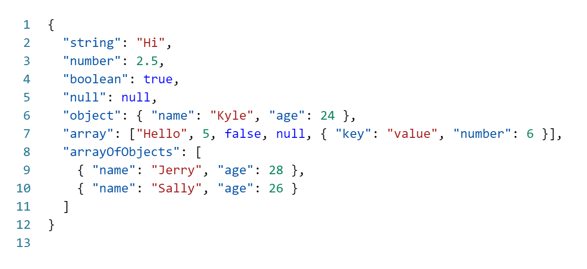
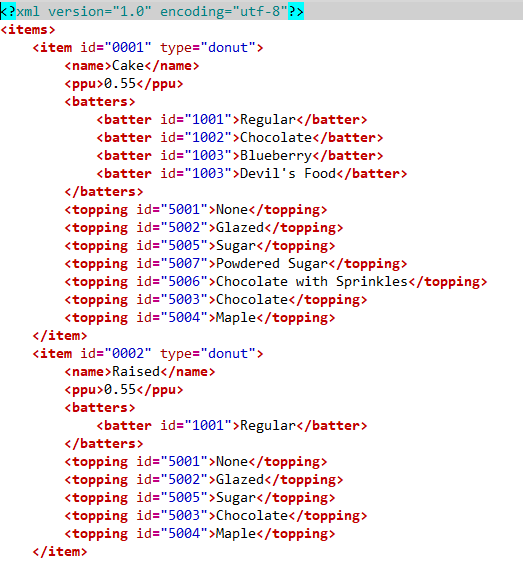
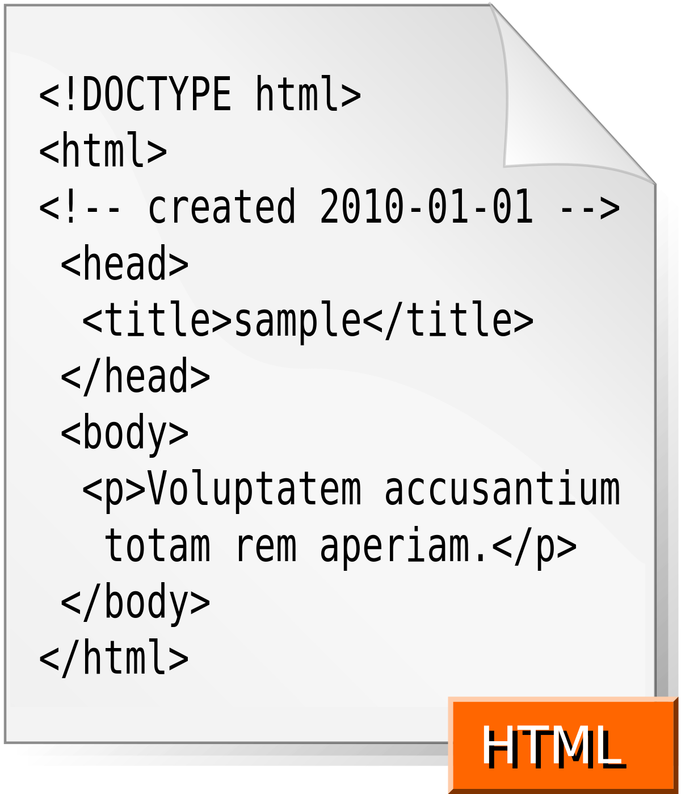
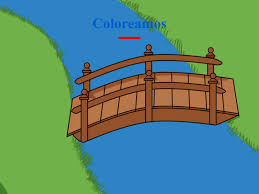
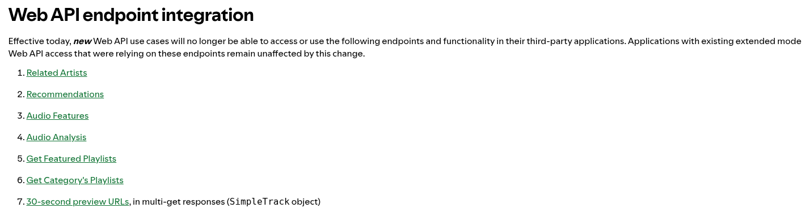
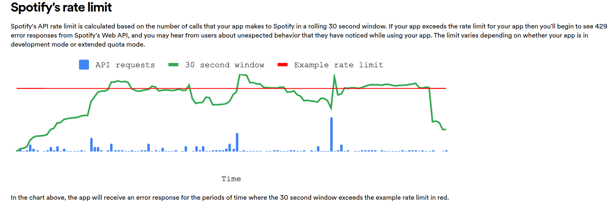
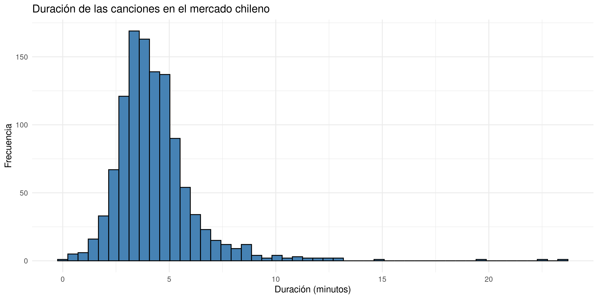
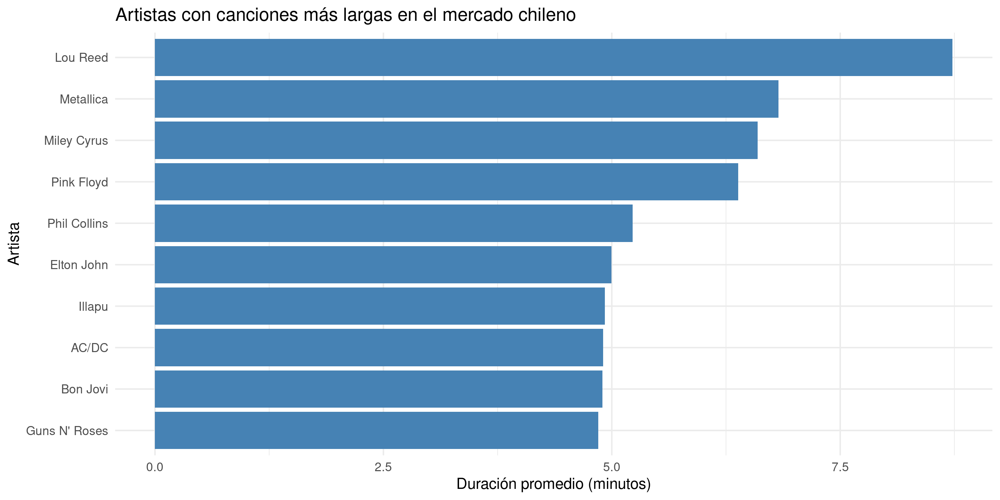
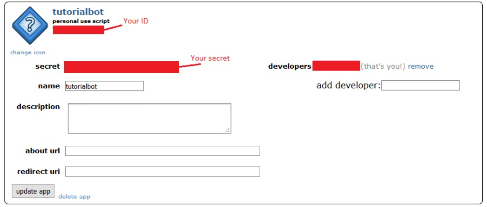

Métodos computacionales para las ciencias sociales
Extracción de información web
Contenidos de la clase
Uso de APIs para las ciencias sociales
Spotify
Wikipedia
Produciendo datos

Produciendo datos
gratis != fácil
Las fuentes de datos no tradicionales y/o web muchas veces implican un arduo trabajo de captura y procesamiento
Debemos entrenarnos para ser buenos productores de información
No debemos asustarnos si nos encontramos con tecnologías que no conocemos bien
Formatos y tecnologías de la web




Produciendo datos
Existen métodos para extraer datos de las personas

Existen métodos para extraer datos de internet
Internet es una gran fuente de información, pero debemos aprender a extraerla
Estrategias que revisaremos
Utilización de APIs
Web scraping
APIs
¿Qué es un API?
Application programming interface (interfaz de programación de aplicaciones)
Pieza de código que comunica 2 aplicaciones o sistemas

¿Qué es una API
Una API nos permite acceder a datos, sin enterarnos de la implementación que hay detrás
- ¿SQL?
- ¿Grafos?
- ¿mongodb?
No nos importa
Características de una API
Recibe una petición (request) y devuelve una respuesta estructurada
La API manda al servidor la solicitud
Generalmente, la respuesta es un archivo json (ahondaremos en esto después)
Características de una API
Métodos más comunes:
- GET: obtener recurso
- POST: crear recurso o enviar datos
- PUT: actualizar recurso
- PATCH: actualizar recurso
- DELETE: eliminar recurso
Nosotros solo utilizaremos GET y POST
Ejemplo de un request
Hacer requests correctamente implica conocer algunos protocolos
Estamos pidiendo todos los discos de Bruno Mars desde Spotify, usando curl desde la terminal
En R podemos usar un paquete llamado httr, pero sigue siendo complejo
Algunas APIs para las ciencias sociales
En este bookdown se describen varias APIs y aplicaciones para las ciencias sociales
Algunos ejemplos:
youtube
google news
twitter (X)
spotify
google places
Revisaremos un poco spotify, wikipedia y reddit
spotify
Primeros pasos
Pasos a seguir
- Crear una cuenta en spotify (gratis o pagada)
- Entrar a spotify for developers
- Ir a la sección dashboard y crear una aplicación
- Dentro de la aplicación, ir a settings y buscar las credenciales (client id y client secret)
Ahora podemos empezar a descargar datos
Primeros pasos
Con nuestras credenciales debemos activar un token que dura una hora
Comentario al margen
- Nunca deben escribir explícitamente sus credenciales en el código
- Una alternativa es usar variables de ambiente
Identificadores spotify
Las APIs suelen funcionar con un sistema de identificadores:
- álbum
- artista
- mercado
- episodios
Podemos ver el id de un artista mediante la aplicación de escritorio
Discos de Bruno Mars
https://open.spotify.com/artist/0du5cEVh5yTK9QJze8zA0C?si=0fbx6sUJR-m9IuOckJ0xlA
Exploremos Unorthodox Jukebox
Exploremos treasure
La API nos devuelve características del track
Endpoint deprecated

Explorando géneros
La función get_genre_artists permite hacer búsquedas con ciertos criterios
- género
- mercado
Es muy importante el sistema de paginación
En general, las APIs tienen mecanismos para no solicitar toda la información en una sola llamada
Paginación
- limit: número de respuestas que queremos (máximo = 50)
- offset: índice desde el cual queremos partir (máximo = 1.000)
Paginación
Cuando sobrepasamos el 1.000, obtenemos un error
Discos de rock en Chile
Vamos a descargar la información sobre los álbumes de bandas de rock dentro del mercado chileno
Debemos seguir los siguientes pasos:
- Buscar los identificadores de las bandas
- Buscar los identificadores de los álbumes
- Buscar descargar las canciones de cada álbum
Discos de rock en Chile
¡No olvidemos la paginación!
Deberías usar un loop para iterar sobre una secuencia de offsets
Almacenar la información en una lista puede ser buena idea
Pista: Podría servirles esta secuencia
Paso 1: descargar las bandas
Lo mismo en versión map (bonus track)
Solo las primeras 30 bandas
En sus casas prueben con más bandas
Paso 2: Extraer álbumes
Ahora buscamos la discografía para todas estas bandas
albumes <- list()
i <- 1 # iterador
# Para cada banda
for (id in bandas_rock_df$id) {
# Descargar discografía completa
albumes[[i]] <- get_artist_albums(id) #<<
i <- i + 1
}
# Combinar todo en una tabla y muestrear 100 álbumes
albumes_df <- albumes %>%
bind_rows() %>%
sample_n(100) # muestra de 100 álbumes
write_csv(albumes_df, "data/albumes_mercado_chileno_sample.csv")Paso 3: Extraer tracks
Extraemos los tracks para cada álbum
tracks <- list()
i <- 1 # iterador
for (album in albumes_df$id) {
tracks[[i]] <- get_album_tracks(album) #<<
i <- i + 1 # iterador
print(i)
}
# Unir todo en un dataframe
tracks_df <- tracks %>%
bind_rows()
# Debemos hacer un pequeño procesamiento, porque tenemos datos anidados
for (i in 1:nrow(tracks_df) )
{
tracks_df$first_artist[[i]] <- tracks_df$artists[[i]]$name[[1]]
}
tracks_df$first_artist <- unlist(tracks_df$first_artist)
write_csv(tracks_df, "data/tracks_mercado_chileno_sample.csv")Restricciones de la API

Exploremos los datos
Guardé previamente algunos datos
Exploremos los datos
sample_tracks <- sample_tracks %>%
mutate(time_minutes = duration_ms/1000/60 ) ## convertir a minutos
sample_tracks %>%
ggplot(aes(x = time_minutes)) +
geom_histogram(bins = 50, fill = "steelblue", color = "black") +
labs(title = "Duración de las canciones en el mercado chileno",
x = "Duración (minutos)",
y = "Frecuencia") +
theme_minimal()
Exploremos los datos
Miremos las bandas con canciones más largas
sample_tracks %>%
group_by(first_artist) %>%
summarise(mean_duration = mean(time_minutes)) %>%
arrange(desc(mean_duration)) %>%
slice(1:10) %>%
ggplot(aes(x = reorder(first_artist, mean_duration), y = mean_duration)) +
geom_bar(stat = "identity", fill = "steelblue") +
coord_flip() +
labs(title = "Artistas con canciones más largas en el mercado chileno",
x = "Artista",
y = "Duración promedio (minutos)") +
theme_minimal()
wikipedia
Desafío
¿Queremos el contenido de los artículos que contengan el concepto Unión Soviética
Vamos a interactuar directamente con la API, es decir, sin pasar por un paquete
- Encontraremos los título de las páginas que contienen Unión Soviética
- Buscaremos el contenido a partir de los títulos encontrados
Buscando artículos
Debemos armar la estructura del request. Usamos método GET
Buscando artículos
Extraemos el contenido de la respuesta con content
Dado que está en json, debemos “parsearlo” con fromJSON
Buscando artículos
Ya tenemos los títulos que nos interesan 😀
Ahora debemos buscar el contenido de esos títulos
Debemos hacer una nueva petición. Probemos con el primer título
titulo <- resultados$title[[1]]
url <- paste0("https://", idioma, ".wikipedia.org/w/api.php")
respuesta <- GET(url, query = list(
action = "query",
format = "json",
prop = "extracts",
titles = titulo,
exlimit = 1,
explaintext = TRUE, # Texto plano sin HTML
exsectionformat = "plain" # para evitar los encabezados
))
contenido <- fromJSON(content(respuesta, "text", encoding = "UTF-8"))
paginas <- contenido$query$pages
paginas[[1]]$extract # se parsea como una lista[1] "La Unión Soviética (en ruso: Советский Союз, romanizado: Sovetskiy Soyuz), oficialmente denominada Unión de Repúblicas Socialistas Soviéticas (URSS, en ruso: Союз Советских Социалистических Республик, romanizado: Soyuz Sovetskikh Sotsialisticheskikh Respublik; CCCP),[n. 1] fue un Estado socialista federal que se extendió por Europa del Este y Asia del Norte (Eurasia), compuesto por varias Repúblicas Socialistas Soviéticas (RSS). Inicialmente creada por la RSFS de Rusia, RSS de Ucrania, RSS de Bielorrusia y la RSFS de Transcaucasia, llegó a ser conformada por un total de quince RSS. Fundada el 30 de diciembre de 1922, la Unión Soviética permaneció hasta su disolución el 26 de diciembre de 1991.[12] Fue considerado el primer país con un estado comunista y de sistema socialista, así como una superpotencia, dada su influencia social, política, económica y militar a nivel global. Desempeñó un papel principal durante la Segunda Guerra Mundial contra la Alemania nazi, así como también en la Guerra Fría, liderando el bloque socialista en confrontación con Estados Unidos, donde iniciaría su desintegración interna y posterior disolución.\nLuego de la Revolución de Febrero de 1917, la cual puso fin al Imperio ruso, se asentó el Gobierno provisional ruso, que luego fue derrocado por la Revolución de Octubre del mismo año, se estableció el gobierno de los bolcheviques llamado Sovnarkom. Tras la supresión de la Asamblea Constituyente Rusa por los bolcheviques, se desencadenó la guerra civil rusa que fue ganada por el nuevo régimen soviético. El 30 de diciembre de 1922, fue creada la Unión Soviética con la fusión de Rusia, Transcaucasia, Ucrania y Bielorrusia.\nTras el deceso del primer líder soviético, Vladímir Lenin, en 1924, Iósif Stalin ganó la lucha por el poder[13] y dirigió el país a través de una industrialización a gran escala, con una economía centralizada y una extrema represión política.[13][14] En junio de 1941, durante la Segunda Guerra Mundial, la Alemania nazi junto a sus aliados invadió la Unión Soviética, un país con el que había firmado un pacto de no agresión llamado luego Pacto Ribbentrop-Mólotov. Al cabo de cuatro años de una guerra brutal, la Unión Soviética emergió victoriosa como una de las dos superpotencias del mundo, junto a los Estados Unidos.\nLa Unión Soviética y sus Estados aliados de Europa Oriental, denominados bloque del Este, estuvieron involucrados en la Guerra Fría, que fue una prolongada lucha ideológica y política mundial contra los Estados Unidos y sus aliados del Bloque Occidental; finalmente la Unión Soviética cedió ante los problemas económicos y los disturbios políticos internos y externos.[15][16] Durante este período, la Unión Soviética llegó a ser el modelo de referencia para futuros Estados socialistas. Desde 1945 hasta 1991, la Unión Soviética y los Estados Unidos dominaron la agenda global de la política económica, asuntos exteriores, operaciones militares, intercambio cultural, progresos científicos incluyendo la iniciación de la exploración espacial, y deportes (incluidos los Juegos Olímpicos). A finales de la década de 1980, el último mandatario soviético, Mijaíl Gorbachov, trató de reformar el Estado con sus políticas de la perestroika y glásnost, pero la Unión Soviética se derrumbó y fue disuelta formalmente el 26 de diciembre de 1991 tras el fallido intento de golpe de Estado de agosto.[17] Luego de esto, la Federación de Rusia asumió sus derechos y obligaciones.[11]\nLos límites geográficos de la Unión Soviética variaron con el tiempo, pero tras sus últimas anexiones territoriales, incluyendo la anexión de los estados bálticos (Lituania, Letonia y Estonia) y la del este de Polonia (Ucrania occidental y Bielorrusia occidental), Besarabia y algunos otros territorios durante la Segunda Guerra Mundial, desde 1945 hasta la disolución, los límites correspondieron aproximadamente a aquellos del extinto Imperio ruso, con las exclusiones notables de Polonia, la mayor parte de Finlandia y Alaska; abarcaba así algo más de la séptima parte de la superficie emergida de la Tierra.\n\n\nHistoria\n\nSe piensa tradicionalmente que la Unión Soviética es la sucesora del Imperio ruso; no obstante, pasaron cinco años entre el último Gobierno de los zares y la instauración de la Unión Soviética. El último zar, Nicolás II, gobernó el Imperio ruso hasta su abdicación en marzo de 1917 en la Revolución de Febrero, en parte debido a la presión de los enfrentamientos en la Primera Guerra Mundial, luego un breve Gobierno provisional ruso tomó el poder, para ser derrocado en la Revolución de Octubre de ese mismo año por revolucionarios encabezados por el líder bolchevique Vladímir Lenin.\nLa Unión Soviética fue establecida en diciembre de 1922, mediante la firma del Tratado de Creación de la URSS como la unión de las repúblicas socialistas soviéticas de RSFS de Rusia (o RSFSR, conocida como Rusia bolchevique), RSS de Ucrania, RSS de Bielorrusia y RSFS de Transcaucasia gobernadas por partidos bolcheviques. A pesar de la fundación del Estado soviético como una entidad federativa de muchas repúblicas constituyentes, cada una con sus propias entidades políticas y administrativas, a menudo se aplicó incorrectamente el término «Rusia Soviética» —estrictamente aplicable solo a la República Socialista Federativa Soviética de Rusia (RSFS de Rusia)— a todo el país por políticos y escritores no soviéticos.\n\n\nRevolución y fundación del Estado soviético\n\nLa actividad revolucionaria moderna en el Imperio ruso comenzó con la Revuelta decembrista de 1825, y aunque la servidumbre fue abolida en 1861, lo fue en términos desfavorables para los campesinos y sirvió para animar a los revolucionarios. Un parlamento, la Duma Imperial de Rusia, fue establecido en 1906, después de la Revolución de 1905. A pesar de la resistencia del zar a los intentos de pasar de una monarquía absoluta a una constitucional, finalmente fue promulgada la Constitución rusa de 1906, la primera constitución del país. Sin embargo, la agitación social continuó y se agravó durante la Primera Guerra Mundial por el fracaso militar y la escasez de alimento en las principales ciudades.\nUn levantamiento popular espontáneo en Petrogrado, en respuesta al decaimiento de la economía y la moral en tiempo de guerra, culminó con el derrocamiento del Gobierno imperial en marzo de 1917 (véase Revolución de Febrero). La autocracia zarista fue reemplazada por el Gobierno provisional ruso, cuyos líderes pensaron en establecer una democracia liberal en Rusia y continuar participando en el lado de la Triple Entente en la Primera Guerra Mundial. Al mismo tiempo, para asegurar los derechos de la clase obrera, las asambleas de trabajadores, conocidas como sóviets, nacen a lo largo de todo el país. Los bolcheviques, dirigidos por Vladímir Lenin, presionaron a favor de una revolución socialista tanto en dichas asambleas como en las calles, derrocó al Gobierno Provisional el 7 de noviembre (25 de octubre según el calendario juliano) de 1917 (véase Revolución de Octubre), y entregándose el poder a los sóviets de obreros, soldados y campesinos. Pocas semanas después se convocó a elecciones democráticas, que tras la derrota de Lenin provocó que el nuevo gobierno bolchevique disolviera la Asamblea Constituyente Rusa pocos meses después. En diciembre de 1917, los bolcheviques firmaron un armisticio con las Potencias Centrales, aunque en febrero de 1918, los combates se habían reanudado. En marzo, los soviéticos abandonaron la guerra definitivamente y firmaron el Tratado de Brest-Litovsk.\nA partir de 1917, se produjo una larga y sangrienta guerra civil rusa entre los Rojos y los Blancos, terminó en 1923 con la victoria de los Rojos e incluyó la intervención extranjera, la ejecución del zar Nicolás II y su familia y la hambruna de 1921, que mató a cerca de cinco millones de personas.[18] Tras la guerra polaco-soviética de 1919-1921 y la guerra de independencia de Ucrania de 1917-1921, se firmó la «Paz de Riga» que a principios del año 1921 dividió los territorios disputados de Bielorrusia y la República Popular Ucraniana entre la Segunda República polaca y la RSFS de Rusia. La Unión Soviética tuvo que resolver conflictos similares con las recién independizadas Finlandia, Estonia, Letonia y Lituania.\n\n\nUnificación de las repúblicas soviéticas\nEl 29 de diciembre de 1922, en una conferencia de delegaciones plenipotenciarias de Rusia, Transcaucasia, Ucrania y Bielorrusia se aprobó el Tratado de Creación de la Unión Soviética y la Declaración de la Creación de la Unión Soviética,[19] se formó la Unión de las Repúblicas Socialistas Soviéticas.[20] Estos dos documentos fueron confirmados por el primer Congreso de los Sóviets de la Unión Soviética y firmados por los cabezas de las delegaciones[21] Mijaíl Kalinin, Mijaíl Tsjakaya, Mijaíl Frunze, Grigori Petrovski y Aleksandr Cherviakov[22] respectivamente el 30 de diciembre de 1922.\nEl 1 de febrero de 1924, la Unión Soviética fue reconocida por el Imperio británico,[23][24] siendo primer ministro el laborista Ramsay MacDonald, y en ese mismo año se aprobó una Constitución soviética, que legitimaba la unión de diciembre de 1922.\nLa reestructuración intensiva de la economía, la industria y la política del país empezaron desde los primeros días del poder soviético en 1917. Una gran parte se realizó según los Decretos Iniciales Bolcheviques, documentos del Gobierno soviético, firmados por Vladímir Lenin. Uno de los adelantos más prominentes era el plan GOELRÓ, que propugnaba una reestructuración profunda de la economía soviética basada en la electrificación total del país. El plan se inició en 1920, se desarrolló durante un período de 10 a 15 años. Incluyó la construcción de una red de 30 centrales eléctricas regionales, incluyendo diez grandes centrales hidroeléctricas, y la electrificación de numerosas empresas industriales.[25] El Plan llegó a ser el prototipo para el subsiguiente Plan Quinquenal y finalizó prácticamente en 1931.[26]\n\n\nStalin (1927-1953)\n\nDesde el comienzo de la Unión Soviética su Gobierno estuvo basado en un unipartidismo administrado por el Partido Comunista de la Unión Soviética.[27] Después de la política económica del comunismo de guerra llevada a cabo durante la Guerra Civil, el Gobierno soviético permitió que algunas empresas privadas coexistieran con la industria nacionalizada durante los años 1920. Del mismo modo, la requisa total de los excedentes alimentarios en el campo fue reemplazado por impuestos sobre los alimentos (véase Nueva Política Económica).\nLos líderes soviéticos sostuvieron que un Gobierno de un único partido era necesario para asegurar que la «explotación capitalista» no regresara a la Unión Soviética y que los principios del centralismo democrático representaran la voluntad del pueblo. El debate sobre el futuro de la economía constituyó el telón de fondo en la lucha por el poder que se desencadenó entre los líderes soviéticos tras la muerte de Lenin en 1924. En un principio, Lenin iba a ser reemplazado por un liderazgo colectivo compuesto por Grigori Zinóviev de Ucrania, Lev Kámenev de Rusia y Stalin de Georgia.\nEl 3 de abril de 1922, Iósif Stalin fue nombrado secretario General del Partido Comunista de la Unión Soviética y Lenin lo había nombrado jefe de inspección de los trabajadores y campesinos. Al consolidar gradualmente su influencia y aislar o limitar a sus rivales dentro del partido, Stalin se convirtió en el principal dirigente soviético. En octubre de 1927, Grigori Zinóviev y León Trotski fueron expulsados del Comité Central. Tras el inicio de la Gran Purga, Zinóviev fue ejecutado en 1936, mientras Trotski fue expulsado de la URSS en 1929 y asesinado en 1940.\nEn 1928, Stalin introdujo el Primer Plan Quinquenal destinado a construir una economía socialista. Esto, a diferencia del internacionalismo proletario expresado por Lenin y Trotski a través del curso de la Revolución, apuntó al socialismo en un solo país. En la industria, el Estado asumió el control de todas las empresas existentes y emprendió un programa intensivo de industrialización y en la agricultura fueron establecidas las granjas colectivas (koljós) por todas partes en el país.\n\nTras la deskulakización, los kuláks sobrevivientes fueron perseguidos y muchos enviados al Gulag a realizar trabajos forzados.[28] Los trastornos sociales continuaron a mediados de la década de 1930. La Gran Purga de Stalin resultó en la ejecución de muchos «viejos bolcheviques», que habían participado en la Revolución de Octubre. La cifra de muertos es incierta, con una amplia gama de estimaciones. Según los archivos soviéticos desclasificados, entre 1937 y 1938 la NKVD arrestó a 1 500 000 personas, de las cuales fueron fusiladas 681 692.[29] El exceso de muertes durante la década de 1930 en su conjunto estaban en el rango de 10 a 11 millones de personas.[30] A pesar de la confusión de mediados a finales de la década de 1930, la Unión Soviética desarrolló una poderosa economía industrial en los años precedentes a la Segunda Guerra Mundial, convirtiéndole en una potencia industrial a nivel internacional.\n\nLa década de 1930 vio la cooperación más cercana entre los países occidentales y la Unión Soviética. En 1933, se establecieron relaciones diplomáticas entre los Estados Unidos y la Unión Soviética. Cuatro años más tarde, la Unión Soviética apoyó a la República Española en la guerra civil española contra el golpe de Estado de los sublevados, apoyados por la Italia fascista y la Alemania nazi. No obstante, después de que el Reino Unido y Francia concluyesen los Acuerdos de Múnich con la Alemania nazi, la Unión Soviética realizó tratos con este último país concluyendo el Pacto Ribbentrop-Mólotov (pacto de no agresión nazi-soviético) y el Tratado Alemán-Soviético de Amistad, Cooperación y Demarcación. Esto desencadenó la invasión soviética de Polonia de 1939 y la anexión de Lituania, Letonia y Estonia en 1940. A finales de noviembre de 1939, al verse incapaz de forzar a Finlandia a mover su frontera 25 kilómetros de Leningrado por medios diplomáticos, Stalin ordenó la intervención del Ejército Rojo en dicho país, lo cual provocó la llamada Guerra de invierno.\nEn el este, el Ejército Rojo ganó varias batallas decisivas durante los enfrentamientos fronterizos con el Imperio del Japón en 1938 y 1939. Sin embargo, en abril de 1941, la Unión Soviética firmó el Pacto de Neutralidad con los japoneses, reconociendo la integridad territorial de Manchukuo, un Estado títere japonés.\n\n\nParticipación en la Segunda Guerra Mundial\n\nAlemania una vez que se consideró lo suficientemente fuerte,[31] rompió el pacto de no agresión que había firmado con la Unión Soviética, en Moscú el 23 de agosto de 1939, e invadió la Unión Soviética el 22 de junio de 1941, inició lo que se conocía en la Unión Soviética (y en la Rusia actual y en el resto de países que antiguamente conformaban la Unión Soviética) como la «Gran Guerra Patria». El Ejército Rojo detuvo al aparentemente invencible ejército alemán en la Batalla de Moscú. La Batalla de Stalingrado, que duró desde finales de 1942 hasta principios de 1943, asestó un duro golpe a los alemanes y sus aliados del cual nunca se recuperaron completamente y lo convirtió en un punto de inflexión de la guerra. Después de Stalingrado, las fuerzas soviéticas avanzaron a través de Europa Oriental hasta Berlín y forzaron la rendición de Alemania en mayo de 1945. El ejército alemán sufrió el 80 % de sus bajas militares en el Frente Oriental.[32]\n\nEse mismo año, la Unión Soviética, en el cumplimiento de su acuerdo con los aliados en la Conferencia de Yalta, denunció el Pacto de Neutralidad soviético-japonés en abril de 1945[33] e invadió Manchukuo y otros territorios controlados por Japón el 9 de agosto de 1945.[34] Este conflicto terminó con una decisiva victoria soviética, que contribuyó a la rendición incondicional de Japón y al fin de la Segunda Guerra Mundial.\n\nLa Unión Soviética sufrió enormemente durante la guerra, perdiendo aproximadamente 27 millones de personas.[35] A pesar de ello, surgió del conflicto como una superpotencia militar. Una vez que negó el reconocimiento diplomático del mundo occidental, la Unión Soviética tuvo relaciones oficiales con prácticamente todas las naciones en la década de 1940. Como miembro de las Naciones Unidas durante su fundación en 1945, se convirtió en uno de los cinco miembros permanentes del Consejo de seguridad de la ONU, que le dio el derecho de veto a cualquiera de sus resoluciones (véase Unión Soviética y las Naciones Unidas).\nLa Unión Soviética mantuvo su estatus como una de las dos superpotencias del mundo durante cuatro décadas a través de su hegemonía en Europa oriental derivada de su fuerza militar, su fuerza económica, su ayuda a países en vías de desarrollo y de sus investigaciones científicas, especialmente en tecnología espacial y armamento.\n\n\nInicio de la Guerra Fría\n\nDurante la inmediata posguerra, la Unión Soviética reedificó y expandió su economía, al mantener su control estrictamente centralizado. La Unión Soviética ayudó a la reedificación de los países del bloque del Este en la posguerra, mientras los convertía en Estados satélite con la fundación de la alianza militar del Pacto de Varsovia en 1955 y con la formación del Consejo de Ayuda Mutua Económica o COMECON de 1949 a 1991, este último un equivalente a la Comunidad Económica Europea.[36] Más tarde, el COMECON suministró ayuda a la eventual victoria del Partido Comunista de China y vio crecer su influencia en otras partes del mundo. Por temor a sus ambiciones, el Reino Unido y los Estados Unidos, aliados de la Unión Soviética durante la Segunda Guerra Mundial, se convirtieron en sus enemigos y, en la subsiguiente Guerra Fría, los dos bloques se enfrentaron indirectamente utilizando la mayor parte de sus fuerzas.\n\n\nJrushchov (1953-1964)\n\nIósif Stalin murió el 5 de marzo de 1953. En ausencia de un sucesor comúnmente aceptado, los funcionarios más altos de Partido Comunista optaron por gobernar la Unión Soviética en comité. Nikita Jrushchov, que se había impuesto en esa lucha por el poder a principios de la década de 1950, denunció en su discurso secreto al XX Congreso del PCUS de 1956 la represión política en la Unión Soviética y ordenó la liberación de los presos políticos del Gulag. Además de esa denuncia, procedió a relajar los controles de tipo represivo que hasta entonces ejercía el Partido sobre la sociedad. Todo esto se conoce como el proceso de desestalinización.\nMoscú consideró a Europa oriental como una zona tapón para la defensa preventiva de sus fronteras occidentales y aseguró su control de la región transformando los países de esta parte de Europa en Estados satélites. Al mismo tiempo, la fuerza militar soviética fue utilizada para reprimir sublevaciones anticomunistas en Hungría y Polonia en 1956 (véanse Protestas de Poznań de 1956, octubre polaco y Revolución húngara de 1956).\n\nA finales de 1950, tuvo lugar una confrontación con China relacionada con el acercamiento de la Unión Soviética a Occidente que Mao Zedong percibió como un acto de revisionismo, lo cual condujo a la ruptura sino-soviética. Esto dio lugar a un cisma en todo el movimiento comunista mundial, haciendo que los Gobiernos comunistas en Albania, Camboya y Somalia prefirieran aliarse con China en lugar de la Unión Soviética.\n\nDurante este período, la Unión Soviética continuó avanzando científica y tecnológicamente, lo que le permitió lanzar el primer satélite artificial Sputnik 1 y conseguir la hazaña de llevar por primera vez un ser vivo al espacio exterior: la perra Laika. El 12 de abril de 1961 Yuri Gagarin se convirtió en el primer ser humano en viajar al espacio exterior a bordo de la nave Vostok 1. Valentina Tereshkova fue la primera mujer en ir al espacio a bordo del Vostok 6 el 16 de junio de 1963, Alekséi Leónov se convirtió en la primera persona en caminar en el espacio el 18 de marzo de 1965, y los primeros vehículos exploradores lunares, Lunojod 1 y Lunojod 2.[37]\nJrushchov inició «el deshielo» conocido como el Deshielo de Jrushchov, un complejo cambio en la vida política, cultural y económica de la Unión Soviética. Este incluyó la apertura y el contacto con otras naciones y nuevas políticas sociales y económicas con mayor énfasis en los productos básicos y en la construcción de la vivienda, permitiendo que los niveles de vida aumentaran de una manera espectacular y manteniendo altos niveles de crecimiento económico. La censura también fue suavizada, aunque seguía la prohibición de publicación de novelas que no se ajustaban a los preceptos del realismo socialista como, por ejemplo, la novela Doctor Zhivago cuyo autor, Borís Pasternak, se vio forzado a rechazar el Premio Nobel de Literatura en 1958. Sin embargo, ese mismo año los físicos soviéticos Pável Cherenkov, Iliá Frank e Ígor Tamm fueron galardonados con el Premio Nobel de Física.\nLas reformas de Jrushchov en la agricultura y la administración, sin embargo, fueron generalmente improductivas. En 1962, se desencadenó una crisis con los Estados Unidos por el despliegue soviético de misiles nucleares en Cuba. La Unión Soviética retrocedió después de que los Estados Unidos iniciase un bloqueo naval y ello provocó la caída del prestigio de Jrushchov, siendo destituido en 1964.\n\n\nBrézhnev (1964-1982)\n\nTras la salida de Jrushchov, se produjo otro período de liderazgo colectivo, conformado por Leonid Brézhnev como Secretario general del Partido Comunista, Alekséi Kosyguin como presidente del Consejo de Ministros y Nikolái Podgorni como presidente del Presidium del Sóviet Supremo, que duró hasta la década de 1970 cuando Brézhnev se estableció como la personalidad soviética más importante. En 1968, la Unión Soviética y sus aliados del Pacto de Varsovia invadieron Checoslovaquia para detener las reformas de la Primavera de Praga.\nBrézhnev presidió un período de Détente o distensión con Occidente (véase SALT I, SALT II y Tratado sobre Misiles Antibalísticos) sin dejar al mismo tiempo de incrementar la fuerza militar soviética; la concentración armamentística contribuyó a la desaparición de la Détente a finales de los años 1970. Otro factor que contribuyó al fin de la distensión fue la guerra de Afganistán en diciembre de 1979, con el objeto de apoyar a un Gobierno comunista local que se hallaba en graves dificultades.\nEn octubre de 1977, fue aprobada por unanimidad la tercera constitución soviética, pero el estado de ánimo predominante en el mando soviético durante el momento de la muerte de Brézhnev en 1982, era la aversión al cambio. El largo período de Gobierno a cargo de Brézhnev había comenzado a ser denominado como uno de inmovilismo (застой), con un envejecido y estancado directorio político.\nEn el ámbito deportivo, la Unión Soviética organizó los Juegos Olímpicos de Moscú 1980, con sede en Moscú. Hubo un intento de boicot del evento por parte de Estados Unidos: en el marco de la Guerra Fría y en protesta por la presencia soviética en Afganistán, los estadounidenses decidieron no asistir a los Juegos Olímpicos, tratando al mismo tiempo de persuadir a sus aliados para que tampoco asistieran. En total, 65 países se abstuvieron de participar, principalmente debido a la iniciativa estadounidense.\n\n\nReformas de Gorbachov y disolución de la Unión Soviética\n\nDos fenómenos caracterizaron la siguiente década: el desmoronamiento cada vez más evidente de las estructuras económicas y políticas de la Unión Soviética, y un conjunto poco coherente de reformas enfocadas a revertir ese proceso. Kenneth S. Deffeyes argumentó en Beyond Oil que la administración Reagan había alentado a Arabia Saudita a bajar el precio del petróleo hasta el punto en que los soviéticos no lograran obtener beneficios vendiendo su petróleo, por lo que se agotaron las reservas de divisas de la Unión Soviética.[38]\nLos siguientes dos sucesores de Brézhnev, serían figuras de transición con profundas raíces en la tradición brezhnevita, que no duraron mucho. Cuando asumieron el poder, Yuri Andrópov tenía 68 años y Konstantín Chernenko 72; ambos murieron en menos de dos años. En un intento de evitar un tercer mandatario efímero, en 1985 los soviéticos se volcaron en la siguiente generación y seleccionaron a Mijaíl Gorbachov.[39]\nGorbachov comenzó a aplicar cambios significativos en la economía y en el liderazgo del partido con la perestroika. Su política glásnost permitió el acceso público a la información después de décadas de fuerte censura por parte del gobierno.[39]\nGorbachov también se movió para ponerle fin a la Guerra Fría. En 1988, la Unión Soviética abandonó sus nueve años de guerra en Afganistán y comenzó a retirar sus tropas. En la década de 1980, retiró el apoyo militar a los antiguos Estados satélites de la Unión Soviética, lo que resultó en la caída de varios Gobiernos comunistas. Con el derribo del Muro de Berlín y con Alemania Oriental y Occidental persiguiendo la unificación, el telón de acero se vino abajo.[39]\nA finales de los años 1980, las repúblicas que componían la Unión Soviética incorporaron legalmente movimientos hacia la declaración de soberanía sobre sus territorios, citando el artículo 72 de la Constitución de la Unión Soviética, que indicaba que cualquier república integrante de la Unión Soviética era libre de separarse.[40] El 7 de abril de 1990, fue aprobada una ley en virtud de la cual una república podía salirse de la unión si más de dos terceras partes de los residentes de la misma votaban a favor de ello en un referéndum.[41] Muchas repúblicas celebraron sus primeras elecciones libres en la era soviética a fin de crear sus propias legislaturas nacionales hacia 1990. Muchas de estas legislaturas procedieron a elaborar una legislación que contradecía las leyes de la Unión en lo que se conoció como «La Guerra de Leyes».\n\nEn 1989, la RSFS de Rusia, que era entonces la república más grande (con cerca de la mitad de la población) convocó unas nuevas elecciones para elegir el Congreso de los Diputados del Pueblo de Rusia. Borís Yeltsin fue elegido presidente del Congreso. El 11 de marzo de 1990, Lituania proclama la restitución de la independencia y el fin de ocupación por parte de la Unión Soviética. El 12 de junio de 1990, el Congreso de Diputados del Pueblo declaró la soberanía de Rusia sobre su territorio y tomó la delantera en la elaboración de leyes que trataban de reemplazar algunas de las leyes de la Unión Soviética.[42] El período de incertidumbre legal continuó a lo largo de 1991 así como las repúblicas constituyentes fueron lentamente independizándose de facto (véase Desfile de Soberanías).\nEl 17 de marzo de 1991, se celebró un referéndum que buscaba preservar la Unión Soviética, en el que la mayoría de la población votó por su conservación en nueve de las quince repúblicas soviéticas. Este referéndum dio a Gorbachov un respiro y, en el verano de 1991, se diseñó un Nuevo Tratado de la Unión, en un intento de llegar a acuerdos que convirtieran a la Unión Soviética en una federación mucho más laxa y de disminuir el centralismo político.\nEn el Nuevo Tratado de la Unión ya no se hacía mención de la Unión Soviética y no se utilizaba más la palabra socialista. Este Nuevo Tratado fue realizado en secreto y cuando el primer ministro Pávlov encontró un borrador de este, los dirigentes conservadores del partido y de la KGB lo interpretaron como la base de la disolución de la Unión Soviética y por esa razón optaron por filtrarlo a la prensa. Según el contenido de dicho tratado, la Unión Soviética estaba a punto de dividirse en varios Estados soberanos. Por ello decidieron enfrentarse a Gorbachov y reafirmar el control del Gobierno central sobre las repúblicas de la Unión Soviética.\n\nEl tratado se firmaría el 20 de agosto, pero la firma fue interrumpida por el intento de golpe de Estado de agosto de 1991 contra Gorbachov, por parte de los conservadores en un intento de preservar el sistema soviético. Los conservadores habían creado el Comité Estatal para el Estado de Emergencia,y movilizaron a las tropas soviéticas para proteger las instituciones del Estado, pero desistieron cuando se produjo la muerte accidental de tres jóvenes que cayeron bajo los tanques.\nTras el fracaso del intento de golpe de Estado, Yeltsin, luego de permanecer oculto en su residencia, apareció en el público y desacreditó al Comité de Estado de Emergencia presidido por Yanáyev declarándolo inconstitucional; mientras tanto, el poder de Gorbachov disminuyó vertiginosamente, hecho que Yeltsin aprovechó para consolidar su poder y deslegitimar de una vez por todas el control del Partido Comunista sobre el Gobierno. El equilibrio político se inclinó apreciablemente hacia las repúblicas secesionistas, empezando por la RSFS de Rusia. De hecho, inmediatamente y todavía en agosto de 1991, Letonia y Estonia declararon la restauración de la independencia plena (siguiendo el ejemplo que había dado Lituania en 1990), mientras que las otras 12 repúblicas soviéticas continuaban discutiendo posibles modelos para una Unión cada vez más débil.\n\nEl 8 de diciembre de 1991, los presidentes de Rusia, Ucrania y Bielorrusia firmaron el Tratado de Belavezha que declaró oficialmente la disolución de la Unión Soviética y el establecimiento de la Comunidad de Estados Independientes (CEI) en su lugar.[43] Como quedaban dudas sobre la autoridad del Tratado de Belavezha para disolver la Unión, el 21 de diciembre de 1991, los representantes de todas las repúblicas soviéticas excepto Georgia y las repúblicas bálticas, incluso las tres repúblicas que habían firmado el Tratado de Belavezha, firmaron el Protocolo de Almá-Atá, que confirmó el desmantelamiento consecuente de la Unión Soviética y volvió a plantear el establecimiento de la CEI. La cumbre de Almá-Atá convino también en varias otras medidas prácticas como consecuencia de la extinción de la Unión Soviética.[44] El 25 de diciembre de 1991, Gorbachov presentó su dimisión como Presidente de la Unión Soviética declaró el cargo como extinto y transfirió los poderes que habían sido creados en la presidencia a Borís Yeltsin, el Presidente de Rusia.[45]\nAl día siguiente, el Sóviet Supremo de la Unión Soviética, el cuerpo legislativo más alto de la Unión Soviética, se disolvió a sí mismo. Este hecho es reconocido generalmente como la disolución final de la Unión Soviética como Estado. Muchas organizaciones como el Ejército Soviético y las fuerzas policiales continuaron ocupando sus respectivos puestos hasta principios del año 1992, pero fueron retirados progresivamente y absorbidos por los nuevos Estados constituidos.[46]\nTras la disolución de la Unión Soviética el 26 de diciembre de 1991, Rusia fue reconocida internacionalmente[47] como su sucesor legal en la escena internacional. Para ello, Rusia aceptó voluntariamente todas las deudas externas soviéticas y reclamó las propiedades soviéticas en ultramar como propias. Desde entonces, la Federación de Rusia ha asumido los derechos y obligaciones de la Unión Soviética.\n\n\nMomentos clave en la disolución de la Unión Soviética\n9 de abril de 1989, disolución violenta con intervención del ejército de una manifestación a favor de la independencia de Georgia en Tiflis.\nMayo-junio de 1989, primeras reuniones del Congreso de los Diputados del Pueblo de la Unión Soviética elegido fuera del sistema de soviets.\nJulio de 1989, generalización de las huelgas de mineros que comenzaron en marzo por motivos laborales que tornearon en políticos exigiendo la derogación del Artículo 6 de la Constitución que otorgaba carácter dirigente al PCUS.\n11 de marzo de 1990, Lituania programa su independencia y la salida de la Unión Soviética.\n14 de marzo de 1990, el Congreso de los Diputados del Pueblo de la Unión Soviética deroga el artículo 6 de la Constitución, el PCUS deja de ser considerado «partido dirigente».\n12 de junio de 1990, la República Socialista Federativa Soviética de Rusia proclama su soberanía y pone a sus leyes por encima de las leyes de la Unión.\n19 de noviembre de 1990, los dirigentes de Rusia y de Ucrania se reconocen mutuamente como objetos soberanos y manifiestan la intención de poner en marcha una cooperación económica directa fuera la organización soviética.\nEnero de 1991, las fuerzas de seguridad de la Unión Soviética toman varios edificios gubernamentales en las capitales de Lituania y Letonia en respuesta a las tensiones independentistas de sus órganos de gobierno.\n17 de marzo de 1991, referéndum para la conservación de la Unión Soviética. Se realiza un referéndum sobre la conservación de la Unión Soviética «renovada» la cual es apoyado por el 76,4 % de los votantes. En las repúblicas de Lituania, Estonia, Letonia, Armenia, Georgia y Moldavia es boicoteado por sus gobiernos. En Rusia se realiza otro referéndum en paralelo para crear el puesto de «presidente de la República de Rusia» que sale a favor con un 71,3 % de los votos emitidos.\n9 de abril de 1991, Georgia declaró su independencia.\n12 de junio de 1991, Borís Yeltsin es elegido presidente de Rusia.\n19 de agosto de 1991, intento de golpe de Estado en Moscú, que destituye a Gorbachov.\n24 de agosto de 1991, Ucrania proclama su independencia, que sería seguida por Bielorrusia, Moldavia, Azerbaiyán, Kirguistán y Uzbekistán.\n18 de octubre de 1991, se acuerda la Comunidad de Estados Independientes con la firma del presidente de la Unión Soviética y los de Rusia, Bielorrusia, Armenia, Kazajistán, Kirguizistán, Tukmenistán y Tayikistán.\n1 de diciembre de 1991, referéndum sobre la independencia de Ucrania con un apoyo a la misma del 90,3 % de los votos emitidos.\n8 de diciembre de 1991, creación de la Comunidad de Estados Independientes por un acuerdo, el Tratado de Belavezha, firmado por los presidentes de Rusia, Ucrania y Bielorrusia en el bosque de Belavezha en Bielorrusia.[48]\n25 de diciembre de 1991, Mijaíl Gorbachov dimite como Presidente de la Unión Soviética, entrega los poderes del Estado al presidente de Rusia y es arriada la bandera soviética del Kremlin, se erigió la de la Federación de Rusia en su lugar.[45]\n\n\nGobierno y política\n\nLa Unión Soviética se creó en 1922. Al principio se crearon algunos organismos; sin embargo, el nuevo Estado no se institucionalizó hasta la aprobación en 1924 de una nueva constitución. La Constitución de 1924 establecía unas bases fundamentales del Estado. El órgano legislativo superior era el Sóviet Supremo, elegido mediante sufragio universal y formado por dos cámaras: el Sóviet de la Unión y el Sóviet de las Nacionalidades. La primera de las cámaras ejercía las tareas propias de un parlamento. El Sóviet de las Nacionalidades estaba formado por representantes de las diversas repúblicas federadas y repúblicas autónomas, en un número determinado por la ley. Otra fuente de poder parlamentario era el Congreso de los Sóviets, que se reunía anualmente y estaba formado por representantes de diversos soviets de la Unión Soviética. La Jefatura de Estado estaba encarnada en un órgano colectivo: el Comité Ejecutivo Central Panruso. El Gobierno lo ejercía el Consejo de Comisarios del Pueblo. Ambos órganos eran elegidos por el Sóviet Supremo. Hasta su muerte en 1924, el Presidente del Consejo de Comisarios del Pueblo fue Lenin. En la Constitución de la Unión Soviética de 1924 se incluyó por primera vez la estructura federal de la Unión Soviética y el derecho de las repúblicas federadas a separarse de la Unión Soviética y establecerse como Estados independientes. No se daba al partido una función relevante en el Estado, como sí se haría más tarde en las demás constituciones.\nLa Unión Soviética fue una república federal constituida por quince repúblicas unidas. A su vez, una serie de unidades territoriales formaban las repúblicas. Las repúblicas tuvieron también jurisdicción pensada para proteger los intereses de minorías nacionales. Las repúblicas tenían sus propias constituciones, que, junto con la Constitución de la Unión, proporcionaban la división teórica del poder en la Unión Soviética. Todas las repúblicas menos la RSFS de Rusia tuvieron sus propios partidos comunistas. En 1989, sin embargo, el PCUS y el Gobierno central se apropiaron toda autoridad significativa, estableciendo las políticas que debían ejecutar los Gobiernos de las repúblicas, óblasts, y distritos.\n\n\nEl Partido Comunista\n\nEn lo alto del Partido Comunista estaba el Comité Central, elegido en los congresos y conferencias del Partido. El Comité Central, por su lado, escogía al Politburó (llamado Presidium entre 1952 y 1966), al Secretariado y al secretario general (denominado primer secretario entre 1953 y 1966), que era literalmente el cargo máximo de la Unión Soviética.[49] Según el grado de consolidación del poder, podían ser tanto el Politburó como cuerpo colectivo o el secretario general, que siempre estaba ocupado por uno de los miembros del Politburó, quienes dirigían al país y al partido[50] (excepto por el período de Stalin, marcado por un autoritarismo altamente personalizado, ejercido directamente a través de su posición en el Consejo de Ministros, en lugar del Politburó a partir de 1941).[51] No estaban sometidos al control de todos los miembros del Partido, ya que el principio fundamental de la organización del Partido era el centralismo democrático, exigiendo una estricta subordinación a los órganos superiores, además las elecciones eran sin oposición, puesto que los candidatos eran propuestos por los niveles superiores.[52]\nEl Partido Comunista mantuvo su dominio sobre el Estado principalmente por su control en el sistema de nombramientos. Todos los altos funcionarios del Gobierno y la mayoría de los diputados del Sóviet Supremo eran miembros del PCUS. De los jefes del Partido, Stalin entre 1941 y 1953 y Jrushchov entre 1958 y 1964, fueron presidentes del Consejo de Ministros. Tras el retiro forzoso de Jrushchov, el líder del partido prohibió este tipo de doble pertenencia,[53] pero los últimos Secretarios Generales, al menos durante una parte de su mandato, también ocuparon la posición de Presidente del Presidium del Sóviet Supremo, nominalmente el jefe del Estado. Las instituciones en los niveles inferiores fueron supervisadas y en ocasiones sustituidas por las organizaciones primarias del Partido.[54]\nEn la práctica, el grado de control del Partido podía extenderse por toda la burocracia estatal, particularmente después de la muerte de Stalin, estaba lejos de ser total, con la burocracia persiguiendo intereses distintos que en ocasiones provocaban conflictos con el Partido.[55] Sin embargo, el Partido, tampoco era monolítico de arriba abajo, aunque las facciones fueron ocasionalmente prohibidas.[56]\n\n\nGobierno de la Unión Soviética\n\nEl Sóviet Supremo (sucesor del Congreso de los Sóviets y del Comité Ejecutivo Central), fue nominalmente el máximo órgano de Estado durante la mayor parte de la historia soviética,[57] mientras que en un inicio simplemente actuaba como una institución para sellar, aprobar e implementar todas las decisiones tomadas por el Partido, sin embargo, las facultades y funciones del Sóviet Supremo se ampliaron en la década de 1950, 1960 y 1970, incluyendo la creación de comisiones y comités estatales nuevos. También adquirió poderes adicionales tras la aprobación de los Planes Quinquenales y por el presupuesto estatal soviético.[58] El Sóviet Supremo elegía un Presidium para ejercer su poder entre las sesiones plenarias,[59] celebradas ordinariamente en dos ocasiones al año, y nombraba al Tribunal Supremo,[60] al procurador general[61] y al Consejo de Ministros (conocido antes de 1946 como Consejo de Comisarios del Pueblo), presidido por el Presidente (Primer ministro) y dirigía a la enorme burocracia responsable por la administración de la economía y la sociedad.[59] Las estructuras del Estado y del Partido de las repúblicas constituyentes emulaban enormemente la estructura de las instituciones centrales, si bien la RSFS de Rusia, a diferencia del resto de repúblicas, no tuvo una rama republicana del PCUS durante la mayor parte de su historia, siendo gobernada directamente por el Partido de toda la unión hasta 1990. Las autoridades locales se organizaban mediante los comités del partido locales, los sóviets locales y los comités ejecutivos. Mientras que el sistema estatal era nominalmente federal, el PCUS era unitario.[62]\nLa policía de seguridad del Estado, (la KGB y las agencias predecesoras) jugaron un papel muy importante en la política soviética. Fueron instrumentales en el terror estalinista,[63] pero después de la muerte de Stalin, la policía de seguridad del Estado quedó sometida a un estricto control por parte del Partido. Bajo Yuri Andrópov, presidente de la KGB entre 1967 y 1982 y secretario general del Partido entre 1982 y 1983, la KGB, además de dedicarse a la supresión de la disidencia política y al mantenimiento de una extensa red de informantes, se reafirmó a sí misma como un actor político, siendo hasta cierto punto independiente dentro de la estructura del partido,[64] que culminó en la campaña de anticorrupción enfocada a oficiales de alto rango del Partido que se llevó a cabo a finales de la década de 1970 e inicios de los 80.[65]\n\n\nGobernantes de la Unión Soviética\n\nLa Unión de Repúblicas Socialistas Soviéticas fue un Estado socialista federal compuesto por quince repúblicas, creado el 30 de diciembre de 1922 y disuelto el 25 de diciembre de 1991. Si bien la jefatura de Estado y de Gobierno eran cargos diferenciados, buena parte del poder político recaía en el secretario general del Partido Comunista de la Unión Soviética y otros miembros de su Comité Central.\nDe hecho, era común que el secretario general del Partido fuera presidente del Presidium, jefe de Estado o presidente del Consejo de Ministros (jefe de Gobierno). Hasta Nikita Jruschov fue costumbre que el líder del partido estuviera directamente a cargo del poder ejecutivo, pero a partir su sucesor Leonid Brézhnev ocuparon la jefatura de Estado. La prensa occidental por lo general hacía caso omiso de estas distinciones y llamaba al líder político presidente de la Unión Soviética o primer ministro de la Unión Soviética, aunque estos cargos no existieron oficialmente hasta los últimos meses del Gobierno de Mijaíl Gorbachov.\nEl cargo de secretario general del Partido no fue creado hasta el mes de abril de 1922 y se convirtió en el máximo puesto tras la muerte de Lenin, ideólogo de la Revolución de Octubre y principal dirigente bolchevique. Entre marzo de 1953 y el 8 de abril de 1966, el cargo se llamó primer secretario. A partir de esa fecha y hasta el 14 de marzo de 1990, el cargo volvió a denominarse secretario general del PCUS.\n\n\nFuerzas Armadas soviéticas\n\nLas Fuerzas Armadas soviéticas, también llamadas Fuerzas Armadas de la Unión de Repúblicas Socialistas Soviéticas o Fuerzas Armadas de la Unión Soviética se refiere a las fuerzas armadas de la República Socialista Federativa Soviética de Rusia (1917-1922), y la Unión Soviética (1922-1991) desde sus inicios en las secuelas de la guerra civil rusa a su disolución en diciembre de 1991.\nDe acuerdo con la ley del servicio militar de toda la Unión, dictada en septiembre de 1925, las Fuerzas Armadas soviéticas constaban de cinco componentes: El Ejército Soviético, la Fuerza Aérea Soviética, la Armada, la Dirección Política del Ejército rojo (Политическое управление Красной армии), y las Tropas del Ministerio del Interior (ru:Внутренние войска МВД СССР). Después de la Segunda Guerra Mundial se añadieron los siguientes cuerpos armados: las Tropas de misiles estratégicos (1959), las Fuerzas de defensa antiaérea (1948) y las Tropas de Protección Civil (1970).\n\n\nSeparación del poder y reforma\n\nLas Constituciones soviéticas, que se promulgaron en 1918, 1924, 1936 y 1977,[66] no limitaron el poder del Estado. No existía una separación formal de los poderes entre el partido, el Sóviet Supremo y el Consejo de Ministros[67] que representaran a los poderes ejecutivo y legislativo del Gobierno. El sistema fue gobernado más por convenios informales que por el estatuto, y no existió ningún mecanismo asentado para la sucesión del liderazgo. Hubo amargas y a veces mortales luchas de poder en el Politburó después de la muerte de Lenin[68] y Iósif Stalin,[69] así como después de la destitución de Jrushchov,[70] debido a un golpe de Estado en el Politburó y en el Comité Central.[71] Todos los líderes soviéticos del partido antes de Gorbachov murieron en ejercicio, excepto Georgi Malenkov[72] y Jrushchov, ambos despedidos de la dirección del partido en medio de una lucha interna dentro del mismo.[71]\n\nEn el período de 1988 a 1990, frente a una considerable oposición, Mijaíl Gorbachov promulgó las reformas que cambiaron el poder de los órganos superiores del partido y que hicieron al Sóviet Supremo menos dependiente en ellos. Se estableció el Congreso de los Diputados del Pueblo, del cual la mayoría de los miembros fueron elegidos en elecciones competitivas celebradas en marzo de 1989. El Congreso ahora elegía al Sóviet Supremo, que se había convertido en un Parlamento a tiempo completo, mucho más fuerte que antes. Por primera vez desde la década de 1920, se negó a autorizar las propuestas del partido y del Consejo de Ministros.[73] En 1990, Gorbachov introdujo y asumió el cargo de Presidente de la Unión Soviética, concentró el poder en su oficina ejecutiva, independiente del partido y subordinado al Gobierno,[74] ahora renombrado a sí mismo como el Gabinete de Ministros de la Unión Soviética.[75]\nLas tensiones crecieron entre las autoridades de toda la unión en virtud de Gorbachov, los reformistas en Rusia dirigidos por Borís Yeltsin, controlaban al recién elegido Sóviet Supremo de la RSFS de Rusia y a los de línea dura del Partido Comunista. Del 19 al 21 de agosto de 1991, un grupo de línea dura efectuó un golpe de Estado fallido. Tras el fallido golpe, el Consejo de Estado de la Unión Soviética se convirtió en el máximo órgano de poder del Estado «en el período de transición».[76] Gorbachov renunció como secretario general, permaneciendo solo como presidente durante los últimos meses de existencia de la Unión Soviética.[77]\n\n\nSistema judicial\n\nEl poder judicial soviético no era independiente de las otras ramas del Gobierno. La Corte Suprema supervisaba a los tribunales inferiores (Tribunales del Pueblo) y aplicaba la ley según lo establecido por la Constitución o según lo que interpretase el Sóviet Supremo. El Comité de Supervisión Constitucional revisaba la constitucionalidad de las leyes y decretos. La Unión Soviética utilizó el principio inquisitivo del Derecho romano, donde el juez, el procurador y el abogado defensor colaboraban para establecer la verdad.[78]\n\n\nRelaciones internacionales\n\nTras la negación inicial del reconocimiento diplomático por parte del mundo capitalista, la Unión Soviética llegó a tener relaciones oficiales con la mayoría de las naciones del mundo a finales de los años 1980, aumentando su importancia en la esfera internacional y pasando de estar fuera de las organizaciones y negociaciones internacionales, a ser uno de los árbitros del destino de Europa después de la Segunda Guerra Mundial. Como miembro de las Naciones Unidas desde su fundación en 1945, el país se convirtió en uno de los cinco miembros permanentes del Consejo de Seguridad de Naciones Unidas que le dio el derecho de veto de sus resoluciones ( ver Unión Soviética y las Naciones Unidas).\nEn 1949 nueve países de Europa Oriental fundaron el Consejo de Ayuda Mutua Económica (COMECON), como réplica al Plan Marshall y a la OECE. El objetivo del órgano era integrar la economía de estos países en la de la Unión Soviética, por medio de una rigurosa planificación, que los países miembros debían seguir obligatoriamente, y una estrecha coordinación.[79] La contraparte militar al COMECON era el Pacto de Varsovia. La economía soviética era también de gran importancia para la Europa Oriental debido a las importaciones de recursos naturales vitales de la Unión Soviética, como el gas natural.\nMoscú consideraba a Europa Oriental una zona excelente para defender sus fronteras occidentales y aseguró su control en la región transformando los países de Europa del Este en Estados satélites, algo así como los EE. UU. con la Europa occidental. Las tropas soviéticas intervinieron en la Revolución Húngara de 1956 y junto con el Pacto de Varsovia expulsaron a los dirigentes checoslovacos en 1968, ya que el Gobierno de ese país había dictado medidas económicas que se hallaban fuera del marco de planificación, así como otras medidas políticas.[79] Este suceso se conoce como la «Primavera de Praga».\nA finales de los años 1950, una confrontación con China derivada del acercamiento de la Unión Soviética con Occidente que Mao rechazó, sumada a una serie de reformas implementadas por Jrushchov, condujo a la ruptura sino-soviética. Esto dio lugar a una rotura a través del movimiento comunista global y de Gobiernos comunistas en Albania y Camboya que eligieron aliarse con China en lugar de la Unión Soviética. Por una época, la guerra entre los aliados anteriores parecía ser una posibilidad; mientras que las relaciones se refrescarían durante los años 1970, no volverían a la normalidad hasta la era de Mijaíl Gorbachov.\nDurante el mismo período, hubo una confrontación tensa entre la Unión Soviética y los Estados Unidos sobre el despliegue soviético de misiles nucleares en Cuba durante la Crisis de los misiles de Cuba.\nEl KGB (Comité para la Seguridad del Estado) sirvió en cierto modo como la contraparte soviética a la Oficina Federal de Investigación (FBI) y a la Agencia Central de Inteligencia (CIA) de los Estados Unidos, porque funcionaba con una red masiva de informantes a través de la Unión Soviética y era utilizada para supervisar las violaciones de la ley. La rama exterior del KGB fue utilizada para recoger información en países alrededor del globo. Después de la disolución de la Unión Soviética fue sustituido en Rusia por el SVR (Servicio de Inteligencia Extranjera) y el FSB (Servicio Federal de Seguridad).\nEl KGB no estaba sin control. El GRU (Directorio Principal de Inteligencia), que no fue hecho público por la Unión Soviética hasta el final de la era soviética durante la perestroika, fue creado por Lenin en 1918 y sirvió como órgano centralizado de la inteligencia militar y como controlador institucional para la energía con relativamente menos restricción que el KGB. Con eficacia, sirvió para espiar a los espías, y, curiosamente, el KGB sirvió una función similar con el GRU. Como el KGB, el GRU funcionó en otras naciones alrededor del mundo, particularmente en los Estados del bloque soviético y países satélites. El GRU continuó funcionando aún en Rusia, con unos recursos que excedían los del SVR según algunas estimaciones.\nEn los años 1970, la Unión Soviética alcanzó una paridad nuclear aproximada con los Estados Unidos. Percibió su propia implicación como esencial para la solución de cualquier problema internacional importante. Mientras tanto, la Guerra Fría dejó paso a la distensión y a un patrón más complicado de las relaciones internacionales en las cuales el mundo no estuvo claramente dividido en dos bloques opuestos. Los países menores tenían más capacidad de afirmar su independencia, y las dos superpotencias reconocieron su interés común en intentar controlar la extensión y la proliferación de armas nucleares (véase SALT I, SALT II, y el Tratado sobre Misiles Antibalísticos).\nEn el año 1972, los Estados Unidos y la Unión Soviética sorprendieron al mundo, cuando anunciaron que estaban trabajando en la creación de una estación espacial única. Las delegaciones de ambas superpotencias firmaron ese mismo año un tratado en Moscú, sobre este innovador proyecto. El Proyecto de pruebas Apolo-Soyuz que entonces parecía anunciar el fin de la Guerra Fría, se convirtió en un símbolo de paz y buena voluntad que acabaría con las tensiones causadas por la carrera espacial y permitiría que cada parte conociera mejor el programa espacial del otro.[80] El día 17 de julio de 1975, los objetivos del convenio se hicieron realidad cuando el astronauta estadounidense Thomas Stafford, comandante de la tripulación de la nave Apolo y el cosmonauta soviético Alexei Leonov, comandante de la tripulación de nave Soyuz, estrecharon sus manos en el primer saludo espacial internacional de la historia.[81] El extraordinario trabajo conjunto y la convivencia de esta primera tripulación espacial internacional conmovió al mundo; al demostrar que ambas superpotencias podían hacer a un lado sus diferencias y unir sus esfuerzos y recursos para lograr algo semejante. El resultado de la misión conjunta fue un éxito rotundo y un logro inimaginable tanto desde el punto de vista tecnológico; cómo desde el punto de vista de las relaciones internacionales entre ambos.[80][82] En 1977, poco antes de las conversaciones en Ginnebra sobre los acuerdos SALT II, las delegaciones estadounidense y soviética, firmaron un nuevo convenio espacial que prorrogaba el trabajo conjunto que hizo posible la misión Apolo-Soyuz en 1975.[83]\nDurante este tiempo, la Unión Soviética firmó tratados de amistad y de cooperación con un buen número de países no socialistas, especialmente del tercer mundo o pertenecientes al movimiento de los no aliados como la India y Egipto. A pesar de algunas diferencias ideológicas, Moscú se interesó en ganar posiciones estratégicas importantes mediante la ayuda económica y militar a los movimientos revolucionarios en el tercer mundo. Por todas estas razones, la política exterior soviética era de gran importancia para el resto de países del mundo que no integraban el campo socialista y ayudaba a determinar la dirección de la política exterior a nivel internacional.\nAunque innumerables burocracias estuvieron implicadas en la formación y la ejecución de la política exterior soviética; las pautas principales de la política fueron determinadas por el Politburó del partido comunista. Los primeros objetivos de la política exterior soviética habían sido el mantenimiento y el realce de la seguridad nacional y el mantenimiento de la hegemonía en Europa Oriental. Las relaciones con los Estados Unidos y la Europa occidental eran también una preocupación importante para los gobernantes soviéticos, y las relaciones con los Estados del tercer mundo fueron por lo menos parcialmente determinadas por la proximidad de cada Estado a la frontera soviética y a las estimaciones soviéticas de su significación estratégica.\nDespués de que Mijaíl Gorbachov sucediera a Konstantín Chernenko como secretario general del PCUS en 1985 introdujo muchos cambios en la política exterior soviética y en la economía de la Unión Soviética. Gorbachov persiguió políticas conciliatorias hacia el Occidente en vez de mantener el statu quo de la Guerra Fría. La Unión Soviética terminó su intervención en Afganistán, firmó tratados estratégicos de reducción de armas con los Estados Unidos, y permitió que sus aliados en Europa Oriental determinaran sus propios asuntos. La caída del muro de Berlín, que comenzó en noviembre de 1989, señaló dramáticamente el fin de la influencia externa de la Unión Soviética en la Europa central y oriental, culminando dos años más tarde con el desmantelamiento del sistema sovético.\n\n\nRepúblicas\n\nConstitucionalmente, la Unión Soviética fue una unión de Repúblicas Socialistas Soviéticas (RSS) junto a la República Socialista Federativa Soviética de Rusia (RSFS de Rusia), aunque el Gobierno altamente centralizado del Partido Comunista hizo que la unión fuera meramente nominal.[84] El Tratado de Creación de la Unión Soviética fue firmado en diciembre de 1922 por cuatro repúblicas fundadoras, la RSFS de Rusia, RSFS de Transcaucasia, RSS de Ucrania y la RSS de Bielorrusia. En 1924, durante la delimitación nacional en Asia Central, las RSS de Uzbekistán y de Turkmenistán fueron constituidas de partes de la RSFS de Rusia, que eran la RSSA de Turkestán y dos dependencias soviéticas, la RSS de Corasmia y la RPS de Bujará. En 1929, la RSS de Tayikistán se separó de la RSS de Uzbekistán. Con la Constitución de 1936, los constituyentes de la RSFS de Transcaucasia, concretamente las RSS de Georgia, Armenia y Azerbaiyán, fueron elevados a repúblicas de la unión, mientras que las RSS de Kazajistán y Kirguistán fueron separadas de la RSFSR.[85] En agosto de 1940, la Unión Soviética formó la RSS de Moldavia de partes de la RSS de Ucrania y de la Besarabia anexionada desde Rumania. También anexó los Estados bálticos como las RSS de Estonia, Letonia y Lituania. La RSS Carelo-Finesa se separó de la RSFSR en marzo de 1940 y se fusionó en 1956. En octubre de 1944 la Unión Soviética se anexionó la República de Tannu Tuvá, Estado independiente de Asia central, que pasó a constituirse como Óblast autónomo dentro de la RSFSR. Entre julio de 1956 y en septiembre de 1991, hubo 15 repúblicas de la unión (véase el mapa abajo).[86]\nEl 16 de noviembre de 1988, el Sóviet Supremo de la RSS de Estonia aprobó la declaración de soberanía Estonia que reafirmó la soberanía de Estonia y declaró la supremacía de las leyes de Estonia sobre las de la Unión Soviética.[87] En marzo de 1990, el recién elegido Sóviet Supremo de la RSS de Lituania declaró su independencia, que fue seguida por el Sóviet Supremo de Georgia en abril de 1991. Aunque el derecho simbólico de las repúblicas de separarse fue nominalmente garantizado por la Constitución y el Tratado de la Unión,[84] las autoridades soviéticas se negaron a reconocerlo en un principio. Después del intento de golpe de Estado de agosto, la mayoría de las otras repúblicas siguieron el ejemplo. Finalmente, la Unión Soviética reconoció la secesión de Estonia, Letonia y Lituania el 6 de septiembre de 1991. Las repúblicas restantes fueron reconocidas como independientes con la disolución final de la Unión Soviética en diciembre de 1991.[88]\n\n\nSímbolos\n\nLa bandera de la Unión Soviética corresponde al emblema utilizado por dicho Estado desde su establecimiento en 1922 hasta su disolución durante 1991.\nA lo largo de su historia, el emblema tuvo diversas modificaciones, pero en general mantuvo la misma estructura desde su adopción, el 12 de noviembre de 1923. La bandera, en proporción 1:2, era completamente roja (color tradicional del comunismo) y en su cantón tenía en dorado el símbolo de la hoz y el martillo y sobre este una estrella roja con borde dorado.\n\nLa bandera tuvo gran importancia para los diversos movimientos políticos de carácter marxista y sirvió de inspiración para diversos emblemas, especialmente de países socialistas durante la época de la Guerra Fría. A su vez, las diversas banderas de las repúblicas que conformaban la URSS. eran modificaciones de la bandera nacional.\n\nEl escudo de la Unión Soviética muestra los tradicionales símbolos soviéticos de la hoz y el martillo sobre un globo terráqueo, que es abrazado por dos haces de trigo rodeados por una cinta roja con el lema de la Unión Soviética escrito en los distintos idiomas de las Repúblicas Socialistas Soviéticas, en orden inverso al que son citadas en la Constitución de la Unión Soviética. Dentro de los haces y bajo el globo aparece un sol radiante, representante del porvenir, y encima del conjunto una estrella roja de cinco puntas.\nEl escudo fue adoptado en 1924 y se utilizó hasta la desintegración de la Unión Soviética en 1991. Se trata de un emblema y no de un escudo de armas, ya que no respeta las normas heráldicas. Sin embargo, en ruso siempre ha sido llamado герб, la palabra usada para los escudos de armas tradicionales.\nLa versión usada en 1991 tenía el lema de la Unión Soviética en 15 idiomas, después de que en 1956, la República Socialista Soviética Karelo-Finesa fuera integrada en la RSFS de Rusia como República Socialista Soviética Autónoma.\nCada República Socialista Soviética y cada República Socialista Soviética Autónoma tenían sus propios escudos de armas, claramente inspirados en el de la Unión Soviética. El escudo de la Unión Soviética también sirvió de base para muchos otros escudos de Estados socialistas, como la República Federal Socialista de Yugoslavia y la República Democrática Alemana.\n\n\nEconomía\n\nLa Unión Soviética se convirtió en el primer país en adoptar una economía planificada, mediante la cual la producción y distribución de bienes fueron centralizados y dirigidos por el Gobierno. La primera experiencia bolchevique con una economía de comando fue con la política del comunismo de guerra, que implicó la nacionalización de la industria, la distribución centralizada de la producción, la requisición coercitiva de la producción agrícola e intentos de eliminar la circulación de dinero, así como las empresas privadas y el libre comercio. Como en 1921, esto había agravado un severo colapso económico causado por la guerra, Lenin reemplazó al comunismo de guerra por la Nueva Política Económica (NEP), legalizando el libre comercio y la propiedad privada de las empresas más pequeñas. Con esto la economía se recuperó rápidamente.[89]\nTras un largo debate entre los miembros del Politburó en el transcurso del desarrollo económico, ya por 1928 y 1929, al ganar el control del país, Iósif Stalin abandonó la NEP e impulsó una planificación central completa, comenzando la colectivización de la agricultura. Los recursos fueron movilizados para la industrialización rápida, que amplió enormemente la capacidad soviética en la industria pesada y en bienes de capital durante la década de 1930.[89] La preparación para la guerra fue una de las principales fuerzas impulsoras detrás de la industrialización, principalmente debido a la desconfianza en el mundo capitalista exterior.[90] Como resultado, la Unión Soviética pasó de una economía mayoritariamente agraria a una gran potencia industrial, abriendo el camino para su surgimiento como una superpotencia después de la Segunda Guerra Mundial.[91] Durante la guerra, la infraestructura y la economía soviética sufrieron una devastación masiva y requirieron una extensa reconstrucción.[92]\n\nA principios de los años 1940, la economía soviética había llegado a ser relativamente autosuficiente; la mayor parte del período hasta la creación del Comecon, solo una proporción muy pequeña de productos nacionales fueron comercializados internacionalmente.[93] Después de la creación del bloque del Este, el comercio exterior aumentó rápidamente. La influencia de la economía mundial en la Unión Soviética seguía siendo limitada por los precios internos fijos y un monopolio estatal sobre el comercio exterior.[94] El consumo de granos y manufacturas sofisticadas se convirtieron en los principales artículos de importación alrededor de la década de 1960.[93] Durante la carrera armamentística de la Guerra Fría, la economía soviética fue agobiada por los gastos militares y presionada fuertemente por una poderosa burocracia dependiente de la industria de armamentos. Al mismo tiempo, la Unión Soviética se convirtió en el mayor exportador de armas al tercer mundo. Importantes cantidades de recursos soviéticos durante la Guerra Fría fueron asignados para la ayuda de los demás Estados socialistas.[93]\nDesde la década de 1930 hasta su colapso a finales de la década de 1980, la forma de funcionamiento de la economía soviética se mantuvo esencialmente sin cambios. La economía formalmente fue dirigida por la planificación central, llevada a cabo por el Gosplán y organizada en planes quinquenales. Sin embargo, en la práctica, los planes fueron altamente globales y provisionales, sujetos a intervenciones especiales por superiores. Todas las decisiones económicas claves fueron tomadas por los dirigentes políticos. La asignación de recursos y las metas de los planes fueron denominadas normalmente en rublos, en lugar de hacerlo en bienes físicos. El crédito estaba desalentado, pero de forma generalizada. La asignación final de la producción se logró mediante la contratación relativamente descentralizada, no planificada. Aunque en teoría los precios se establecieron legalmente desde arriba, en la práctica los precios reales a menudo se negociaron y los vínculos horizontales informales eran generalizados.[89]\nUna serie de servicios básicos fueron financiados por el Estado, tales como la educación y la salud. En el sector manufacturero, se le asignó una mayor prioridad a industria pesada y de defensa que a la producción de bienes de consumo.[95] Los bienes de consumo, especialmente fuera de las grandes ciudades, a menudo eran escasos, de mala calidad y de elección limitada. Bajo la economía planificada, los consumidores no tenían casi ninguna influencia sobre la producción, por lo que las cambiantes demandas de una población con mayores ingresos no podían ser satisfechas con los suministros a precios rígidamente fijos.[96] Una segunda gran economía no planificada creció junto a la planificada vigente a niveles bajos, proporcionando algunos de los bienes y servicios que los planificadores no podían ofrecer. Con la reforma de 1965, se intentó la legalización de algunos elementos de la economía descentralizada.\n\nAunque su crecimiento económico es difícil de estimar precisamente,[97][98] según la mayoría de las fuentes, la economía siguió creciendo hasta mediados de los 80. Hasta la década de 1950, la economía soviética experimentó un crecimiento relativamente alto y estaba alcanzando a Occidente.[99] Sin embargo, desde finales de los años 50, el crecimiento, aunque aún siguió siendo positivo, declinó constantemente, mucho más rápido y consistentemente que en otros países, a pesar de un rápido aumento en el capital social (la tasa de aumento de capital sólo fue superada por Japón).[89]\nEn general, entre 1960 y 1989, la tasa de crecimiento del ingreso per cápita en la Unión Soviética fue un poco superior al promedio mundial (basado en 102 países). Sin embargo, dado al muy alto nivel de inversión en capital físico, al alto porcentaje de personas con educación secundaria y al bajo crecimiento de la población, la economía debería haber crecido mucho más rápido. Según Stanley Fischer y William Easterly, el registro de crecimiento soviético estaba entre «los peores en el mundo». Según sus cálculos, el ingreso per cápita de la Unión Soviética en 1989 debería haber sido dos veces mayor de lo que lo era, si la inversión, la educación y la población hubieran tenido su típico efecto sobre el crecimiento. Los autores atribuyen este pobre desempeño a la baja productividad del capital en la Unión Soviética.[100]\nEn 1987, Mijaíl Gorbachov trató de reformar y revitalizar la economía con su programa de la perestroika. Sus políticas relajaron el control del Estado sobre las empresas, pero aún no permitía su reemplazamiento por incentivos de mercado, resultando finalmente en una fuerte disminución de la producción. La economía, que ya sufría con los bajos ingresos por la exportación de petróleo, comenzó a derrumbarse. Los precios aún eran fijados, y gran parte de las propiedades todavía eran estatales hasta después de la disolución de la Unión Soviética.[89][96] Durante la mayor parte del período después de la Segunda Guerra Mundial hasta su colapso, la economía soviética fue la segunda más grande del mundo por PIB (PPA),[101] aunque en términos per cápita el PIB soviético estaba por detrás de los países del primer mundo.[102]\n\n\nEnergía\n\nLa necesidad de combustible en la Unión Soviética disminuyó desde la década de 1970 hasta la de 1980,[103] tanto en rublos por tonelada de productos sociales brutos como en rublos por productos industriales. Al principio, esta disminución aumentó muy rápidamente, pero fue desacelerándose gradualmente entre 1970 y 1975.\nDesde 1975 y 1980, la Unión Soviética tuvo un crecimiento lento, solo del 2,6 %.[104] El historiador David Wilson, creyó que la industria del gas representaba el 40 % de la producción de combustible soviético a finales de siglo, pero su teoría no se concretó debido al colapso de la Unión Soviética.[105] Teóricamente, la Unión Soviética, habría continuado teniendo una tasa de crecimiento económico del 2 al 2,5 % durante la década de 1990 debido a los campos energéticos soviéticos.[106] Sin embargo, el sector energético enfrentó muchas dificultades, entre ellas los altos gastos militares del país y las relaciones hostiles con Occidente (era pre Gorbachov).[107]\nEn 1991, la Unión Soviética tenía una red de ductos de 82 000 kilómetros para petróleo crudo y otra de 206 500 kilómetros para gas natural.[108] El petróleo, los productos a derivados del mismo, el gas natural, los metales, la madera, los productos agrícolas y una gran variedad de productos manufacturados, principalmente maquinaria, armas y equipos militares, fueron exportados.[109] Durante la década de 1970 y 1980, la Unión Soviética dependía fuertemente de las exportaciones de combustibles fósiles para obtener divisas.[93] En su apogeo en 1988, fue el mayor productor y el segundo mayor exportador de crudo, superada solo por Arabia Saudita.[110]\n\n\nCiencia y tecnología\n\nLa Unión Soviética puso mucho énfasis en la ciencia y tecnología dentro de su economía,[111] sin embargo, los éxitos soviéticos más notables en la tecnología, como producir el primer satélite espacial, por lo general estuvieron a cargo de los militares.[95] Lenin creía que la Unión Soviética nunca superaría al mundo desarrollado si permanecía atrasada tecnológicamente como estaba. Las autoridades soviéticas demostraron su compromiso con la creencia de Lenin, mediante el desarrollo de masivas redes de organizaciones de investigación y desarrollo. En 1989, los científicos soviéticos estaban entre los mejores especialistas capacitados del mundo en diversas áreas, tales como la energía física, determinadas áreas de la medicina, las matemáticas, la soldadura y en las tecnologías militares. Sin embargo los soviéticos permanecieron por detrás tecnológicamente en la química, la biología y en las computadoras, en comparación con el resto de Occidente.\nEl Proyecto Sócrates, bajo la administración Reagan, determinó que la Unión Soviética había abordado la adquisición de la ciencia y tecnología de una manera radicalmente diferente a la que los Estados Unidos estaba utilizando en ese momento. En el caso de los Estados Unidos, la priorización económica estaba siendo utilizada para el legado de investigación y desarrollo autóctono; y lo veía como el medio para adquirir la ciencia y tecnología tanto en el sector privado como en el público. Por el contrario, la Unión Soviética fue la ofensiva y defensiva en maniobrar la adquisición y utilización de la tecnología en todo el mundo, para así aumentar la ventaja competitiva que había adquirido a partir de la tecnología, mientras prevenía que los Estados Unidos adquieran una ventaja competitiva. Además, la planificación basada en tecnología de la Unión Soviética era ejecutada de manera centralizada, centrada en el Gobierno que obstaculizaba enormemente su flexibilidad. Esta significativa falta de flexibilidad fue aprovechada por los Estados Unidos para socavar la fuerza de la Unión Soviética y así promover su reforma.[112]\n[113]\n[114]\n\n\nTransporte\n\nEl transporte fue un componente clave de la economía del país. La centralización económica durante las décadas de 1920 y 1930 condujo al desarrollo de la infraestructura a gran escala, particularmente el establecimiento de Aeroflot, la mayor empresa de aviación soviética.[115] El país tenía una gran variedad de medios de transporte por tierra, agua y aire.[108] Sin embargo, debido al mal mantenimiento, la mayor parte del transporte civil por carretera, agua y aire eran anticuados y tecnológicamente atrasados en comparación con el resto de Occidente.[116]\nEl transporte ferroviario soviético fue el más grande y el más intensamente utilizado en el mundo,[116] también fue más desarrollado que en la mayoría de sus homólogos occidentales.[117] A finales de 1970 y comienzos de 1980, los economistas soviéticos pedían la construcción de más carreteras para aliviar parte de la carga de los ferrocarriles y mejorar el presupuesto público soviético.[118] La red de carreteras y la industria del automóvil[119] permanecieron subdesarrolladas,[119] y las rutas de tierra eran comunes en las afueras de las ciudades más importantes.[120] Los proyectos soviéticos de mantenimiento mostraron ser incapaces de hacerse cargo incluso de las pocas rutas que había en el país. Durante la primera mitad década de 1980, las autoridades soviéticas trataron de resolver el problema de las carreteras ordenando la construcción de otras nuevas.[120] Mientras tanto, la industria automotriz estaba creciendo a un ritmo más rápido que la construcción de carreteras.[121] La red de carreteras subdesarrollados llevó a una creciente demanda de transporte público.[122]\nLa flota marina mercante soviética fue una de las más grandes del mundo.[108]\n\n\nFormas de propiedad\nEn la Unión Soviética hubo dos formas básicas de propiedad, la propiedad individual y la propiedad colectiva (de propiedad conjunta, que en la práctica era cooperativa o estatal). Esta era muy diferente tanto en su contenido como en su condición jurídica. Según las teorías comunistas, el capital (los medios de producción) no podría ser de propiedad privada, aparte de algunas pequeñas excepciones. Tras el fin de la flexibilización a corto plazo de la Nueva Política Económica de Lenin, cualquier propiedad industrial y de terrenos pasó a ser propiedad común de los habitantes, o sea de la propiedad estatal, respectivamente. La propiedad individual podía ser compuesta únicamente por bienes personales, es decir, los de capital (los medios de producción) eran automáticamente de propiedad estatal o cooperativa.\n\n\nGeografía\n\nLa Unión Soviética ocupó la porción oriental del continente europeo y la porción septentrional del continente asiático. La mayor parte del país quedaba al norte de 50° de latitud norte y cubría un área total de aproximadamente 22 402 200 km2. Debido al gran tamaño del Estado, el clima variaba mucho, desde subtropical y continental a subártico y polar, El 11 % de la tierra era cultivable, 16 % eran praderas y pasto, el 41 % bosque, y 32 % fue declarado como «otros» (incluyendo la tundra).\nLa Unión Soviética medía unos 10 000 kilómetros desde Kaliningrado, en el oeste, a la isla de Ratmánova (islas Diómedes), en el estrecho de Bering, aproximadamente el equivalente a la distancia de Edimburgo, Escocia, al este de Nome, Alaska. Desde la punta de la península de Taimir, en el océano Ártico, al pueblo de Asia Central de Kushka, cerca de la frontera afgana, hay casi 5000 kilómetros de terreno, en su mayor parte escabroso e inhóspito. La anchura total de los Estados Unidos continentales quedaría comprendida entre las extremas fronteras septentrional y meridional de la Unión Soviética.\n\n\nDemografía\n\nLos primeros cincuenta años del siglo XX en la Rusia zarista y la Unión Soviética estuvieron marcados por una sucesión de desastres, cada uno acompañado por pérdidas de grandes cantidades de población. El exceso de muertes en el transcurso de la Primera Guerra Mundial y la guerra civil rusa (incluyendo la hambruna de la posguerra) ascendieron a un total de 18 millones,[123] unos 10 millones en la década de 1930,[30] y más de 26 millones entre 1941 y 1945. La población soviética en la posguerra fue de 45 a 50 millones menor de lo que hubiera sido si el crecimiento demográfico de la preguerra hubiese continuado.[35]\nLa tasa bruta de natalidad de la Unión Soviética se redujo de 44,0 por mil en 1926 a 18,0 en 1974, en gran parte debido a la creciente urbanización y al aumento promedio de la edad de los matrimonios. La tasa bruta de mortalidad demostró así una disminución gradual —de 23,7 por mil en 1926 a 8,7 en 1974—. En general, las tasas de nacimiento de las repúblicas del sur en Transcaucasia y Asia Central fueron considerablemente superiores a las de la parte septentrional de la Unión Soviética, y en algunos casos incluso aumentó en el período posterior a la Segunda Guerra Mundial, un fenómeno atribuido en parte a las menores tasas de urbanización y a los matrimonios tradicionalmente más tempranos en las repúblicas meridionales.[124] La Europa soviética se desplazó hacia la fertilidad de sub-reemplazo, mientras que la Asia Central soviética continuó mostrando un crecimiento de la población muy por encima del nivel de la fertilidad de reemplazo.[125]\n\nLa década de 1960 y 1970 fue testigo de una reversión en la trayectoria decreciente de la tasa de mortalidad en la Unión Soviética y esto se notó sobre todo entre los hombres en edad de trabajar, pero también era algo común en Rusia y en otras áreas predominantemente eslavas del país.[126] Un análisis de los datos oficiales de la década de 1980 demostró que después de empeorarse a finales de la década de 1970 y principios de los 80, la mortalidad adulta comenzó a mejorar nuevamente.[127] La tasa de mortalidad infantil aumentó de 24,7 en 1970 a 27,9 en 1974. Algunos investigadores consideran que el ascenso fue real en su mayoría, a consecuencia del empeoramiento de las condiciones de salud y los servicios.[128] El aumento en la mortalidad adulta e infantil no fue explicado o defendido por los funcionarios soviéticos, y el Gobierno soviético simplemente dejó de publicar todas las estadísticas de mortalidad durante diez años. Los demógrafos y especialistas en salud soviéticos permanecieron en silencio con respecto al aumento de la mortalidad hasta finales de los años 1980, cuando se reanudó la publicación de los datos de mortalidad y los investigadores pudieron indagar en las verdaderas causas.[129]\n\n\nGrupos étnicos\n\nLa Unión Soviética fue un país muy diverso étnicamente, con más de 100 grupos étnicos distintos. La población total fue estimada en 293 millones en 1991 y según una estimación de 1990, la mayoría eran rusos (50,78 %), seguidos por los ucranianos (15.45 %) y uzbekos (5,84 %).[130]\nTodos los ciudadanos de la Unión Soviética tenían su propia filiación étnica que figuraba en el documento de identidad. El origen étnico de una persona era elegido a la edad de 16 años[131] por los padres del niño; si estos no estaban de acuerdo, al niño se le asignaba automáticamente el origen étnico de la madre. Debido en parte a las políticas soviéticas, algunos de los grupos étnicos pequeños eran considerados como parte de los más grandes, como los mingrelios de la RSS de Georgia, que fueron clasificados con los lingüísticamente relacionados georgianos.[132]\nEl extenso Estado multinacional que los bolcheviques heredaron después de su revolución fue creado por la expansión zarista durante casi cuatro siglos. Algunos grupos de naciones se unieron voluntariamente al Estado, pero la mayoría fue unida a la fuerza. Generalmente, los rusos y la mayoría de la población no rusa del imperio compartieron poco en cuanto a cultura, religión e idioma.[133] Muy a menudo, dos o más nacionalidades diversas fueron colocadas en el mismo territorio. Por lo tanto, los antagonismos nacionales se desarrollaron con los años no solo contra los rusos, sino a menudo entre algunas de las naciones sujetas también.[134]\nDurante cerca de setenta años, los líderes soviéticos habían mantenido que las fricciones entre las cuantiosas nacionalidades de la Unión Soviética habían sido erradicadas y que la Unión Soviética consistía en una familia de naciones que vivían armoniosamente juntas. No obstante, el fermento nacional que sacudió a la Unión Soviética en los años ochenta probó que dicha afirmación no tenía mayor asidero con la realidad, pues las religiones y culturas tradicionales reemergerían a la más pequeña oportunidad. Esta realidad que enfrentaban Gorbachov y sus colegas significó que, ante la poca confianza en el tradicional uso de fuerza, tuvieran que encontrar soluciones alternativas a fin de evitar la disolución de la Unión Soviética.\nLas concesiones otorgadas a las culturas nacionales y la autonomía limitada tolerada en las repúblicas de la Unión durante los años 1920 llevaron al desarrollo de élites nacionales y a un elevado sentido de identidad nacional. La represión subsecuente y la rusificación provocaron el resentimiento contra la dominación por parte de Moscú y promovieron el posterior crecimiento de la conciencia nacional. Los sentimientos nacionales fueron exacerbados en el Estado multinacional soviético por la competencia incrementada por los recursos, servicios y trabajos.[135]\n\n\nBienestar social\n\n\nEducación\n\nAntes de 1917, en el Imperio ruso, la educación era inaccesible o de difícil acceso para la mayor parte de la población, en especial para el ciudadano urbano y las familias campesinas. No existía educación pública gratuita. Las estimaciones de 1917 registraron que desde un 56 % de la población rusa era analfabeta.[136]\nDespués de la revolución, Anatoli Lunacharski se convirtió en el comisario del pueblo para la educación de la Rusia Soviética. Desde un comienzo, las autoridades soviéticas hicieron un gran hincapié en la alfabetización de la población. Las personas que eran alfabetizadas eran contratadas automáticamente como profesores. Durante un breve período, la calidad fue sacrificada por la cantidad. Hacia 1940, Iósif Stalin pudo anunciar que el analfabetismo había sido eliminado del país. Después de la Gran Guerra Patriótica, el sistema educativo del país se amplió considerablemente. En la década de 1960, casi todos los niños soviéticos tenían acceso a la educación primaria y secundaria, excepto aquellos que vivían en zonas remotas. Nikita Jrushchov trató de hacer la educación aún más accesible, dejándole claro a los niños que la educación estaba estrechamente vinculada a las necesidades de la sociedad. Ideológicamente, la educación era considerada fundamental para la creación del nuevo hombre soviético.[137]\nEl acceso a la educación superior era limitado: solo el 20 % de todos los aspirantes eran aceptados. El resto ingresaba al mercado de trabajo o aprendía un oficio en una Escuela Técnica Vocacional o en un Technicum, otra escuela técnica superior. Además, los estudiantes de familias de dudosa confiabilidad política solían ser excluidos de la educación superior.[138] En este sentido, la administración de Brézhnev introdujo una norma que exigía a todos los aspirantes universitarios presentar una referencia del secretario local del partido Komsomol.[139] Según las estadísticas de 1986, el número de estudiantes por cada 10 000 habitantes fue de 181 para la Unión Soviética, en comparación con los 517 para los Estados Unidos.[140]\n\n\nAsistencia médica\n\nEn 1917, antes de la revolución bolchevique, las condiciones de salud estaban muy por detrás de los países desarrollados. Como Lenin señaló más tarde, «O el piojo derrota al socialismo o el socialismo derrota a los piojos».[142] El principio soviético de la asistencia médica fue concebido por el Comisariado del Pueblo para la Salud Pública en 1918. La asistencia médica iba a ser controlada por el Estado y se prestaría a sus ciudadanos de forma gratuita. El artículo 42 de la Constitución soviética de 1977 le dio a todos los ciudadanos el derecho a la protección de la salud y el acceso libre a cualquier institución de salud en la Unión Soviética. Sin embargo, el sistema de salud de la Unión Soviética no pudo satisfacer todas las necesidades de su pueblo.[143] Antes de que Leonid Brézhnev llegara al poder, la medicina socializada soviética fue vista con un alto estima por muchos especialistas extranjeros. Sin embargo esto cambió; a partir de la ascensión de Brézhnev y la tenencia de Mijaíl Gorbachov como líder, el sistema de salud soviético fue criticado fuertemente por muchos errores básicos, tales como la calidad del servicio y la irregularidad en su disposición.[144] Durante el XIX Congreso del Partido Comunista de la Unión Soviética, el ministro de la Salud Yevgueni Cházov, además de destacar el éxito soviético por tener la mayoría de los médicos y hospitales en el mundo, reconoció las deficiencias del sistema y consideró que se habían desperdiciado miles de millones de rublos soviéticos.[145]\nDespués de la toma de poder comunista, subió la expectativa de vida para todas las edades. Esta estadística fue utilizada por las autoridades para demostrar que el sistema socialista era superior al sistema capitalista. Se mantuvo bastante estable durante varios años, aunque en la década de 1970, bajó ligeramente, probablemente debido al abuso del alcohol. La mayoría de las fuentes occidentales culparon al creciente abuso del alcohol y a la mala asistencia médica; esta teoría también fue aceptada implícitamente por las autoridades soviéticas. Al mismo tiempo, la mortalidad infantil comenzó a aumentar y por esto, después de 1974, el Gobierno dejó de publicar estadísticas sobre este tema. Finalmente, en los años 80 la Unión Soviética poseía una esperanza de vida muy inferior a los países occidentales y comparable a países asiáticos.\nEsta tendencia en parte puede explicarse por el drástico aumento en el número de embarazos en la parte asiática del país donde la mortalidad infantil era más alta, mientras disminuía notablemente en la parte europea más desarrollada de la Unión Soviética.[146]\n\n\nGrupos religiosos\n\nA. L. Eliseev escribió que en una reunión de la comisión antireligiosa del Comité Central del Partido Comunista de toda la Unión (bolchevique) presidida por E. Laroslavskii y que tuvo lugar el 23 de mayo de 1929, los creyentes en el país fueron estimados en el 80 %. No puede descartarse que este porcentaje fue algo subestimado, para demostrar el éxito de la lucha contra la religión.[148]\nEl cristianismo y el islam tuvieron el mayor número de adeptos entre los ciudadanos religiosos del Estado soviético.[149] El cristianismo oriental predominaba entre los cristianos, con tradicional Iglesia ortodoxa rusa siendo la denominación cristiana más grande de la Unión Soviética. Aproximadamente el 90 % de los musulmanes de la Unión Soviética eran suníes, con los chiitas concentrados en la República Socialista Soviética de Azerbaiyán.[149] Los grupos pequeños incluían, católicos, judíos, budistas y una variedad de denominaciones protestantes.[149]\nLa influencia religiosa había sido fuerte en el Imperio ruso y la Iglesia ortodoxa rusa gozaba de un estatus privilegiado como la Iglesia de la monarquía y participaba en la realización de funciones oficiales del Estado.[150] El período inmediato después del establecimiento del Estado soviético incluyó una lucha contra la Iglesia ortodoxa, a la que los revolucionarios consideraban una aliada de la ex clase dominante.[151]\nEn el derecho soviético, la «libertad para celebrar servicios religiosos» estaba garantizada constitucionalmente, aunque el Partido Comunista consideraba a la religión como incompatible con el espíritu marxista del materialismo científico.[151] En la práctica, el sistema soviético se suscribió a una interpretación restrictiva de este derecho y de hecho utilizó una variedad de medidas oficiales para desalentar la religión y frenar las actividades de los grupos religiosos.[151]\n\nEl decreto de 1918 del Consejo de Comisarios del Pueblo que establecía a la República Socialista Federativa Soviética de Rusia como un Estado secular también decretó que «la enseñanza de la religión en todos [los lugares] donde se enseñen materias de aprendizaje general, está prohibida. Los ciudadanos pueden enseñar y pueden aprender religión en privado.»[152] Entre otras restricciones, las aprobadas en 1929, con media década de Gobierno de Stalin, incluían prohibiciones expresas de una variedad de actividades de la iglesia, incluyendo reuniones organizadas para el estudio de Biblia.[151] Miles de establecimientos tanto cristianos como no cristianos fueron cerrados en las décadas de 1920 y 1930 y, en 1940, fueron cerradas no menos del 90 % de las iglesias, sinagogas y mezquitas que habían estado operando en 1917.[153]\nConvencido de que el antisovietismo religioso se había convertido en una cosa del pasado, el Gobierno de Stalin comenzó a trasladarse hacia una política más moderada con respecto a la religión en la década de 1930.[154] Los establecimientos religiosos soviéticos se congregaron abrumadoramente para apoyar el esfuerzo bélico durante la guerra con la Alemania nazi. En medio de otras adaptaciones a la fe religiosa, las iglesias fueron reabiertas, la Radio Moscú comenzó a transmitir un horario religioso y en 1943 fue celebrado un encuentro histórico entre Stalin y el patriarca Sergio I de Moscú, la autoridad de la Iglesia ortodoxa en ese entonces.[154] La tendencia general de este período fue un incremento de la actividad religiosa entre los creyentes de todas las religiones.[155]\nEl sistema soviético se enfrentó nuevamente con las iglesias bajo el liderazgo del secretario general Nikita Jrushchov, que tuvo la característica de ser un período donde el ateísmo fue enfatizado en el currículum educativo y donde numerosas publicaciones estatales promovieron opiniones ateas.[154] Entre 1959 y 1965, el número de iglesias cayó de 20 000 a 10 000, y el número de sinagogas descendió de 500 a 97.[156] El número de mezquitas activas también disminuyó, cayendo de 1500 a 500 en una década.[156]\nLas instituciones religiosas siguieron siendo supervisadas por el Gobierno soviético, pero todas las iglesias, sinagogas, templos y mezquitas recibieron más libertad de acción durante la época de Leonid Brézhnev.[157] Las relaciones oficiales entre la Iglesia ortodoxa y el Gobierno soviético se calentaron nuevamente hasta el punto en que el mandato de Brézhnev honró dos veces al patriarca ortodoxo Alejo I con la Orden de la Bandera Roja del Trabajo.[158] Una encuesta hecha por las autoridades soviéticas en 1982 registró a un 20 % de la población soviética como «creyentes religiosos activos».[159]\n\n\nCrimen\nLas estadísticas sobre delincuencia en la Unión Soviética a menudo fueron publicadas de forma parcial por el Gobierno, porque esta era considerada como una vergüenza ideológica para la Unión Soviética. Según los expertos occidentales, los robos, homicidios y otros delitos violentos fueron menos frecuentes en la Unión Soviética, que en los Estados Unidos porque la Unión Soviética tenía una mayor fuerza policial, estrictos controles sobre las armas y una baja incidencia en el abuso de drogas. La corrupción en la forma de soborno era frecuente, debido principalmente a la escasez de bienes y servicios en el mercado abierto.[160]\nAunque la prensa y radio soviéticas dieron amplia cobertura a la delincuencia en Occidente, la persistencia de la delincuencia en la Unión Soviética era una vergüenza ideológica a la que se le daba relativamente poca atención. Nunca se publicaron estadísticas detalladas acerca de la delincuencia de la Unión Soviética, y un periodista soviético, L. Vladímirov, que desertó a Gran Bretaña en 1966, confirmó que estaba prohibido mencionar el número de delitos en el país en su conjunto o por distritos, provincias, regiones o ciudades.[161]\n\n\nIdeología\nUna premisa básica del marxismo es que la delincuencia es un fenómeno socioeconómico:\n\n \n\nLos teóricos marxistas sostuvieron que las razones más inmediatas de delincuencia en la Unión Soviética fueron la influencia capitalista, el retraso mental y la mala educación.[161][162]\n\n\nCastigo\n\nEn 1989 la Unión Soviética tenía pocas prisiones. Alrededor del 99 % de los criminales convictos sirvieron sus condenas en los campos de trabajo Gulag, supervisados por la Dirección General de Campos de Trabajo Correctivo que estaba bajo el MVD. Los campamentos tenían cuatro regímenes de severidad ascendente. En los campamentos de régimen estricto, los reclusos trabajaban en las tareas más difíciles, por lo general al aire libre y recibiendo raciones escasas. Los trabajos eran menos exigentes y con mejores raciones en los campamentos de los regímenes más leves. El sistema de trabajo correctivo fue considerado por las autoridades soviéticas exitoso debido a que la tasa de reincidencia era muy baja. Sin embargo, las prisiones y campos de trabajo, desde la óptica de los antiguos presos y observadores occidentales, eran conocidos por sus duras condiciones, el tratamiento arbitrario y sádico de los prisioneros y por las violaciones flagrantes de los derechos humanos. En 1989 se estuvo elaborando una nueva legislación, que hacía hincapié en la rehabilitación en lugar del castigo, para humanizar el sistema especial. Sin embargo, en 1989 las condiciones para muchos presos tuvieron pocos cambios.[163]\n\n\nPena de muerte\nLa pena de muerte, llevada a cabo por fusilamiento, se aplicó en la Unión Soviética solo en los casos de traición, espionaje, terrorismo, sabotaje, ciertos tipos de asesinato y robo a gran escala de bienes del Estado por los funcionarios. De lo contrario, la pena máxima para un delincuente que delinquía por primera vez era de quince años. La libertad condicional era permitida en algunos casos después de la finalización de la mitad de la pena y las amnistías periódicas a veces también dieron lugar a la liberación anticipada.[163]\n\n\nDurante el colapso de la Unión Soviética\nCerca y tras el colapso de la Unión Soviética, las estadísticas sobre la delincuencia se movieron brusca y uniformemente hacia arriba. Entre 1991 y 1992, el número de delitos notificados oficialmente y la tasa de delincuencia general mostró un aumento del 27 %; la tasa de criminalidad casi se duplicó entre 1985 y 1992. En los comienzos de la década de 1990, el hurto, robo, y otros actos contra la propiedad representaron aproximadamente dos tercios de todos los delitos en Rusia. Sin embargo, el rápido crecimiento de los delitos violentos fueron los de particular interés para los ciudadanos, incluyendo los homicidios violentos.[164]\n\n\nCultura\n\nLa cultura soviética pasó por varias etapas durante los 70 años de su existencia. Durante los primeros once años de Revolución (1918-1929), hubo una relativa libertad y los artistas experimentaron con varios estilos diferentes en un esfuerzo de encontrar un estilo artístico soviético distintivo. Lenin quiso que el arte fuera accesible al pueblo soviético. Por otro lado, cientos de intelectuales, escritores y artistas fueron exiliados o ejecutados, y sus trabajos prohibidos, por ejemplo Nikolái Gumiliov (ejecutado por conspirar contra el Gobierno bolchevique) y Yevgueni Zamiatin (prohibido).[165]\nEl Gobierno alentó una variedad de tendencias. En el arte y la literatura, numerosas escuelas, algunas tradicionales y otras radicalmente experimentales, proliferaron. El escritor Máximo Gorki y el poeta Vladímir Mayakovski estuvieron activos durante este período. El cine soviético recibió el apoyo del Estado; muchos de los mejores trabajos del cinematógrafo Serguéi Eisenstein datan de este período.\nMás tarde, durante el Gobierno de Stalin, la cultura soviética se caracterizó por el auge y el dominio del estilo impuesto por el Gobierno del realismo socialista, con todas las otras tendencias siendo severamente reprimidas, con raras excepciones, por ejemplo las obras de Mijaíl Bulgákov. Muchos escritores fueron encarcelados y asesinados.[166]\n\n \n\nTras el deshielo de Jrushchov de la década de 1950 y 1960, la censura disminuyó. Una mayor experimentación en formas de arte fueron nuevamente permitidas, por lo que trabajos más sofisticados y sutilmente críticos comenzaron a ser producidos. El Gobierno aflojó su énfasis en el realismo socialista; así, por ejemplo, muchos protagonistas de las novelas del autor Yuri Trífonov se preocupaban por ellos mismos y los problemas de la vida cotidiana, en lugar de hacerlo con la construcción de socialismo. Una literatura disidente clandestina, conocida como samizdat, se desarrolló durante este último período. En la era de Jrushchov, la arquitectura soviética se centró principalmente en el diseño funcional en contraposición al estilo adornado de la época de Stalin.\nEn la segunda mitad de la década de 1980, las políticas de Gorbachov de la perestroika y glásnost ampliaron considerablemente la libertad de expresión en los medios de comunicación y prensa.[168]\n\n\nFiestas\n\n\nNostalgia postsoviética\n\nLa nostalgia por la Unión Soviética es un fenómeno común en Rusia y la CEI del período postsoviético, así como entre los ciudadanos rusos en el extranjero nacidos en la Unión Soviética. Esta nostalgia se expresa en el sistema político, la sociedad, la seguridad social, la cultura, o la estética, además de en los recuerdos de la infancia y la juventud. Este es un fenómeno controvertido, que abarca una amplia gama de opiniones.\nSegún unas encuestas realizadas en 2011, a uno de cada cinco rusos le gustaría vivir nuevamente en la Unión Soviética. El número de rusos que desean vivir nuevamente en la Unión Soviética aumentó de un 16 % en 2010 al 20 %.[169] El total del número de rusos que desean una unión con Ucrania, Bielorrusia y Kazajistán es del 37 %.[169]\nLa cifra de ciudadanos rusos que añoraba la Unión Soviética ya estaba por encima del 50 %, pero cada vez se dispara más: son un 66 % en 2018.[170]\n\n\nLa opinión positiva respecto al fenómeno\n\nExiste un arraigado sentimiento de nostalgia por la Unión Soviética, probablemente debido al hecho de que la Unión Soviética está ligada a los recuerdos de la juventud de muchos habitantes, entre ellos todas las manifestaciones de la era soviética. También se puede deber a las actitudes y la ética de la sociedad soviética: la Unión Soviética promovía los ideales de la bondad, justicia y humanismo,[171] y en una parte importante de la sociedad ha prevalecido el espíritu del colectivismo y rechaza muchos de los valores de la Rusia moderna.[172] Consideran que se está produciendo una devaluación de los valores morales, y a menudo sienten frustración y resentimientos por los intentos, en su opinión, de distorsionar al pasado, menospreciando los ideales y valores sobre los cuales crecieron. En algunos casos, es una consecuencia del desorden social o la insatisfacción con la vida en la Rusia moderna, en la que una parte considerable de la población está acostumbrada al modo de vida soviético.\nTambién desempeñan un papel importante los aspectos sociales. El nivel de vida de la mayor parte de la población cayó de manera drástica en los primeros años posteriores al colapso de la Unión Soviética y las reformas económicas que le siguieron.[173] Además, el Estado soviético era el propietario de la superficie habitable y concedía a los ciudadanos una vivienda, además de encargarse de proporcionar la asistencia sanitaria, la educación y otros servicios sociales, por lo que los ciudadanos pueden ver el cambio como una pérdida de condiciones de vida. Los anticapitalistas también sienten nostalgia de la Unión Soviética.[174]\n\n\nLa opinión negativa respecto al fenómeno\nSegún algunos críticos, la nostalgia por la Unión Soviética y el sistema soviético se expresa en la negación o subestimación de las deficiencias reales que existían en la Unión Soviética (la elevada corrupción institucional, los privilegios de la Nomenklatura, la completa dependencia de los ciudadanos de la burocracia y el exceso de esta, el régimen policial y el severo control estatal sobre la vida social, el expolio, el desabastecimiento, las colas, la persecución de la disidencia, la censura, la gran dificultad para entrar y salir del país, etc.) y la exageración de las virtudes del sistema soviético (la justicia social, la estabilidad, la seguridad, los precios bajos, la accesibilidad de la vivienda, la educación, la medicina pública, etc.).[175]\n\n\nVéase también\n Portal:Unión Soviética. Contenido relacionado con Unión Soviética.\nComunismo soviético\nFilosofía marxista soviética\nRepúblicas de la Unión Soviética\nNueva Política Económica (NEP)\nConsejo de Ayuda Mutua Económica (COMECON)\nFuerzas Armadas Soviéticas\nPacto de Varsovia\nDisolución de la Unión Soviética\nHistoria del comunismo\nNuevo hombre soviético\nPlan Quinquenal (Unión Soviética)\nConflictos postsoviéticos\nRealismo socialista\n\n\nNotas\n\n\nReferencias\n\n\nBibliografía\nAmbler, John; Shaw, Denis J.B.; Symons, Leslie (1985). Soviet and East European Transport Problems. Taylor & Francis. ISBN 0709905572. \nBourdeaux, Michael (2000). «Religión y religiones en Rusia hoy». Istor (2). pp. 26-51. \nComrie, Bernard (1981). The Languages of the Soviet Union. Cambridge University Press (CUP) Archive. ISBN 0709905572. \nHernández, Ángel Santos (1973). «El régimen soviético de relaciones del Estado con la Iglesia». Revista de estudios políticos. pp. 177-231. \nJanz, Denis (1998). World Christianity and Marxism. Nueva York: Oxford University Press. ISBN 0195119444. \nKowalewski, David (1980). «Protest for Religious Rights in the USSR: Characteristics and Consequences». The Russian Review (en inglés) 39. pp. 426-441. \nLane, David Stuart (1992). Soviet Society under Perestroika. Routledge. ISBN 978-0415076005. \nRayfield, Donald (2004). Stalin and His Hangmen: An Authoritative Portrait of a Tyrant and Those Who Served Him. Viking Press. ISBN 0-670-91088-0. \nSimon, Gerard (1974). Church, State, and Opposition in the U.S.S.R.. Berkeley and Los Angeles: University of California Press. ISBN 0520026128. \nWilson, David (1983). The Demand for Energy in the Soviet Union. Taylor & Francis. ISBN 0709927045. \nBanco Mundial y Organización para la Cooperación y el Desarrollo Económico (1991). A Study of the Soviet economy 3. Fondo Monetario Internacional. ISBN 9264134689. \nMadhavan K. Palat, Social Identities in Revolutionary Russia, ed. (Macmillan, Palgrave, Reino Unido, y St Martin’s Press, Nueva York, 2001)\n\n\nEnlaces externos\n Wikimedia Commons alberga una categoría multimedia sobre la Unión Soviética.\n Wikiquote alberga frases célebres sobre la Unión Soviética.\nSovetika.ru - Sitio sobre la Era Soviética (en ruso e inglés)\nСССР (enlaces de historia de la Unión Soviética)\nImágenes de la Unión Soviética Archivado el 18 de agosto de 2022 en Wayback Machine."Buscando artículos
Ahora solo nos falta iterar sobre todos los títulos
urss <- list()
i <- 1
url <- paste0("https://", idioma, ".wikipedia.org/w/api.php")
for (titulo in resultados$title )
{
respuesta <- GET(url, query = list(
action = "query",
format = "json",
prop = "extracts",
titles = titulo, # esta es la parte que va variando
exlimit = 1,
explaintext = TRUE, # Texto plano sin HTML
exsectionformat = "plain" # para evitar los encabezados
))
contenido <- fromJSON(content(respuesta, "text", encoding = "UTF-8"))
paginas <- contenido$query$pages
urss[[i]] <- paginas[[1]]$extract
i <- i + 1
}Versión mejorada
Creamos una función y usamos map
library(purrr)
obtener_contenido <- function(titulo, idioma = "es")
{
url <- paste0("https://", idioma, ".wikipedia.org/w/api.php")
respuesta <- GET(url, query = list(
action = "query",
format = "json",
prop = "extracts",
titles = titulo, # esta es la parte que va variando
exlimit = 1,
explaintext = TRUE, # Texto plano sin HTML
exsectionformat = "plain" # para evitar los encabezados
))
contenido <- fromJSON(content(respuesta, "text", encoding = "UTF-8"))
paginas <- contenido$query$pages
return(paginas[[1]]$extract)
}
urss <- map(resultados$title , obtener_contenido)Cosas adicionales
En un código real debiese haber manejo de casos no exitosos
obtener_contenido <- function(titulo, idioma = "es")
{
url <- paste0("https://", idioma, ".wikipedia.org/w/api.php")
respuesta <- GET(url, query = list(
action = "query",
format = "json",
prop = "extracts",
titles = titulo, # esta es la parte que va variando
exlimit = 1,
explaintext = TRUE, # Texto plano sin HTML
exsectionformat = "plain" # para evitar los encabezados
))
if (status_code(respuesta) == 200)
{
contenido <- fromJSON(content(respuesta, "text", encoding = "UTF-8"))
paginas <- contenido$query$pages
return(paginas[[1]]$extract)
} else
{
return("página no encontrada")
}
}
urss <- map(resultados$title , obtener_contenido)Cosas adicionales
También es aconsejable agregar trycatch
obtener_contenido <- function(titulo, idioma = "es") {
url <- paste0("https://", idioma, ".wikipedia.org/w/api.php")
respuesta <- GET(url, query = list(
action = "query",
format = "json",
prop = "extracts",
titles = titulo,
exlimit = 1,
explaintext = TRUE,
exsectionformat = "plain"
))
if (status_code(respuesta) == 200) {
contenido <- fromJSON(content(respuesta, "text", encoding = "UTF-8"))
# Manejar errores al acceder a contenido$query$pages
resultado <- tryCatch({
paginas <- contenido$query$pages
extracto <- paginas[[1]]$extract
if (is.null(extracto)) {
"extracto no disponible"
} else {
extracto
}
}, error = function(e) {
paste("error al procesar la respuesta:", e$message)
})
return(resultado)
} else {
return("página no encontrada")
}
}API Reddit
Aquí hay documentación de su API
La documentación no es buena 😥
Praw
Usaremos PRAW (Python Reddit API Wrapper) de python
Es mucho más fácil que usar directamente la API 😀
Aquí está la documentación
Primeros pasos
Debemos tener una cuenta en reddit e inscribir una aplicación
Aquí están las instrucciones para crear una app

Autenticación con PRAW 1
Autenticación con PRAW 2
La función Reddit de praw hace la autenticación
Descargando datos 1
Entramos al subreddit bikepacking y extraemos las dos últimas publicaciones
Descargando datos 2
Contamos con varios métodos
- new
- hot
- top
- random
- controversial
- rising
Quiero extraer más publicaciones
Usamos el subreddit Rlanguage y no ponemos límite
Límite de la API
La API no nos deja descargar más de 1.000 comentarios
Es común encontrarse con este tipo de cosas 😢
Podemos ir a buscar más atrás
Fijamos varias ventanas de tiempo
time_filters = ['day', 'week', 'month', 'year', 'all']
posts = []
subreddit = reddit.subreddit('Rlanguage')
# Para cada ventana de tiempo
for time_filter in time_filters:
# Extraemos los 1.000 primeros mensajes
submissions = subreddit.top(time_filter=time_filter, limit=1000)
for submission in submissions:
data = [submission.fullname, submission.title, submission.selftext, submission.score ]
posts.append(data)
df_r = pd.DataFrame(posts, columns=['id', 'title', 'selfttext', "score"])
df_r.to_parquet("data/r_submission_big.parquet")Resultado
Obtenemos un poco más, pero…
… al mismo tiempo tenemos duplicados
Probemos con comentarios de python
time_filters = ['day', 'week', 'month', 'year', 'all']
posts = []
subreddit = reddit.subreddit('Python')
# Para cada ventana de tiempo
for time_filter in time_filters:
# Extraemos los 1.000 primeros mensajes
submissions = subreddit.top(time_filter=time_filter, limit=1000)
for submission in submissions:
data = [submission.fullname, submission.title, submission.selftext, submission.score ]
posts.append(data)
df_python = pd.DataFrame(posts, columns=['id', 'title', 'selfttext', "score"])
df_python.to_parquet("data/python_submission_big.parquet")Comparemos
Idea
Podemos planificar descargas periódicas
Ejemplo: Descargar una vez a la semana durante 2 meses
Así, podemos descargar una gran cantidad de información
Para terminar
Características frecuentes en las API
- Uso de credenciales
- Creación de token
- Tasas máximas de descarga (segundo, minuto, hora, etc)
- Restricciones para datos históricos
- Obsolescencia de algunos endpoints
- Organización en función de identificadores
Para terminar
Spotify, “Wikipedia” y Reddit son casos particulares de uso de API
Cada API tiene sus particularidades
La idea de esta clase ha sido aprender la mecánica general de las API
En la vida real, muchas veces hay que leer documentación
Y tenemos que relacionarnos directamente con los endpoints